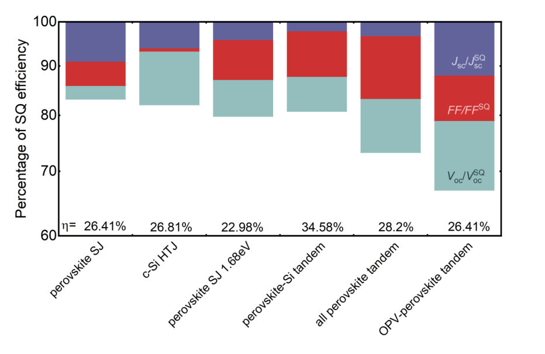
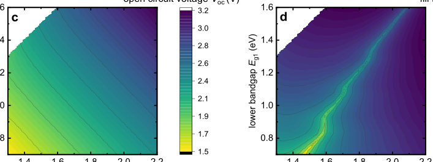
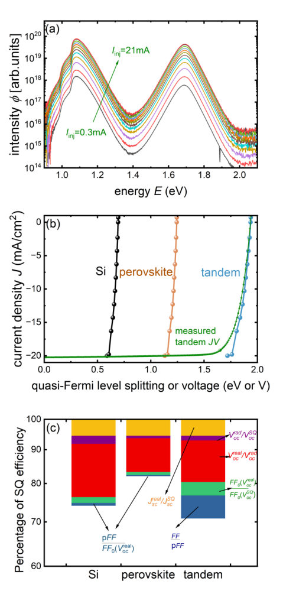
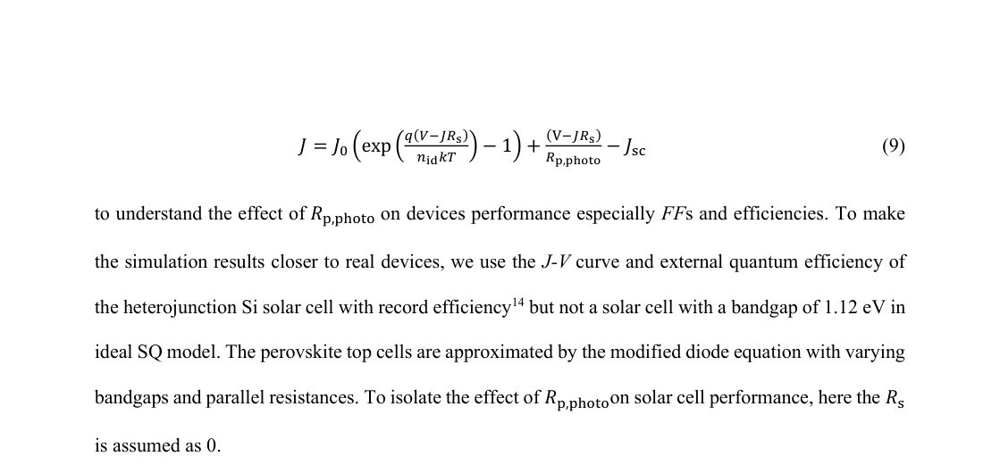
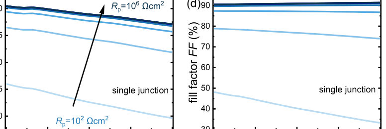
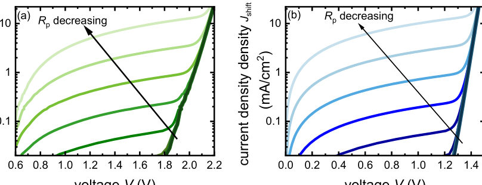
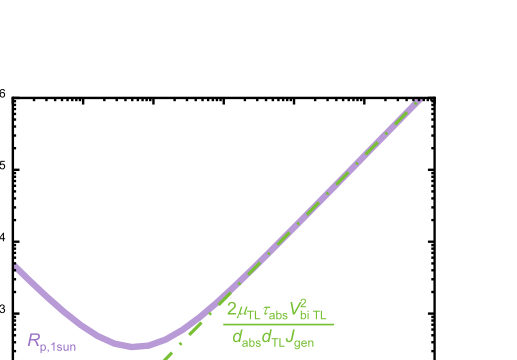
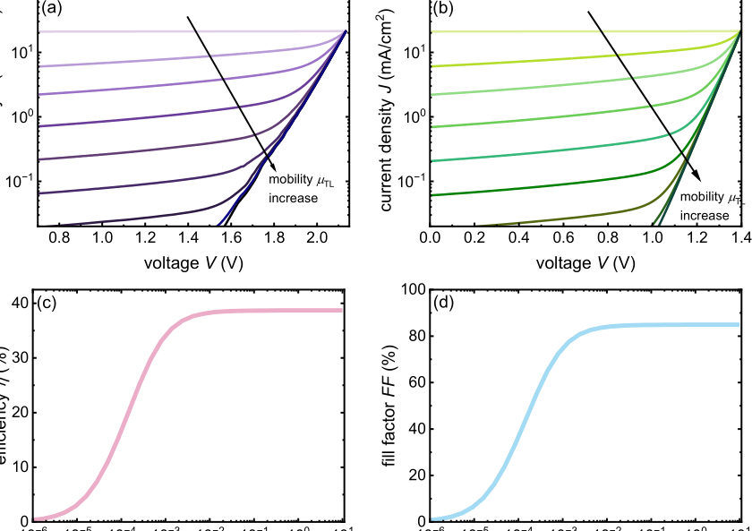
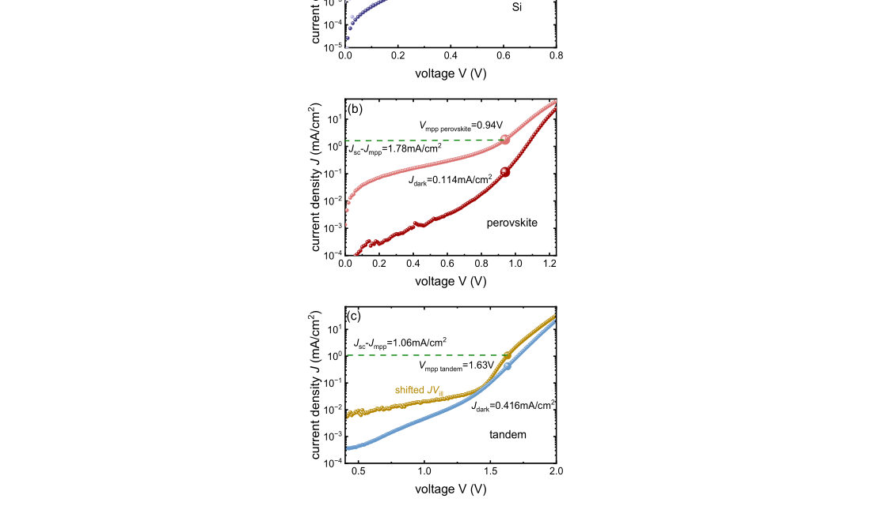
228 papers · 49 relevant · 5 highlighted
Every paper with at least one nonzero topic score, sorted by best-matching score. 🔥 marks scores ≥4/5. Click the title to jump to the full entry below; click [arXiv] to open the paper page. (secondary) marks papers from de-prioritized cond-mat archives.
analog quantum simulation 5/5 · 🔥 exotic spin models in light-matter 4/5 · 🔥 non-equilibrium dynamics 4/5 · entanglement & information structure 3/5 · QC/QI experiment 2/5 · non-equilibrium universality 2/5 · quantum measurements 2/5free-space correlated emission 5/5 · 🔥 Dicke superradiance 4/5 · 🔥 correlated / nonlocal dissipation 4/5 · methods for driven-dissipative 2/5 · non-equilibrium universality 2/5quantum optics experiment 5/5 · 🔥 QC/QI experiment 4/5 · interference shaping light 3/5 · entanglement & information structure 2/5 · quantum measurements 2/5spintronics-quantum-optics interface 5/5 · 🔥 entanglement & information structure 4/5 · Tavis-Cummings & cavity-many-emitter 2/5 · correlated / nonlocal dissipation 2/5QC/QI experiment 5/5 · 🔥 entanglement & information structure 4/5 · quantum measurements 2/5scars & prethermalization 5/5 · entanglement & information structure 3/5 · non-equilibrium dynamics 3/5measurement-induced transitions 4/5 · 🔥 quantum measurements 4/5 · driven-dissipative phase transition 3/5 · non-equilibrium universality 3/5 · Keldysh / 2PI / non-Gaussian methods 2/5 · entanglement & information structure 2/5 · methods for driven-dissipative 2/5 · non-equilibrium dynamics 2/5correlated cavity matter 4/5 · 🔥 entanglement & information structure 4/5 · Keldysh / 2PI / non-Gaussian methods 3/5 · spintronics-quantum-optics interface 3/5 · Tavis-Cummings & cavity-many-emitter 2/5 · analog quantum simulation 2/5 · correlated / nonlocal dissipation 2/5 · exotic spin models in light-matter 2/5non-equilibrium dynamics 4/5 · Kondo & dissipative impurity 3/5 · analog quantum simulation 3/5 · entanglement & information structure 3/5 · Keldysh / 2PI / non-Gaussian methods 2/5 · non-equilibrium universality 2/5non-equilibrium universality 4/5 · Tavis-Cummings & cavity-many-emitter 3/5 · non-equilibrium dynamics 3/5 · analog quantum simulation 2/5 · correlated cavity matter 2/5 · entanglement & information structure 2/5entanglement & information structure 4/5 · 🔥 non-equilibrium dynamics 4/5 · non-equilibrium universality 3/5 · scars & prethermalization 3/5methods for driven-dissipative 4/5 · driven-dissipative phase transition 3/5 · non-equilibrium dynamics 3/5 · correlated / nonlocal dissipation 2/5 · entanglement & information structure 2/5(secondary) — 🔥 quantum optics experiment 4/5 · correlated cavity matter 3/5 · QC/QI experiment 2/5 · Tavis-Cummings & cavity-many-emitter 2/5 · analog quantum simulation 2/5non-equilibrium dynamics 4/5 · methods for driven-dissipative 3/5 · Keldysh / 2PI / non-Gaussian methods 2/5 · driven-dissipative phase transition 2/5 · non-equilibrium universality 2/5correlated / nonlocal dissipation 4/5 · quantum measurements 3/5 · Tavis-Cummings & cavity-many-emitter 2/5 · entanglement & information structure 2/5 · methods for driven-dissipative 2/5Kondo & dissipative impurity 4/5 · 🔥 methods for driven-dissipative 4/5 · non-equilibrium dynamics 3/5 · Keldysh / 2PI / non-Gaussian methods 2/5non-equilibrium dynamics 4/5 · analog quantum simulation 3/5 · methods for driven-dissipative 3/5 · driven-dissipative phase transition 2/5QC/QI experiment 4/5 · 🔥 quantum optics experiment 4/5 · interference shaping light 2/5 · spintronics-quantum-optics interface 2/5quantum measurements 4/5 · correlated / nonlocal dissipation 2/5 · entanglement & information structure 2/5 · methods for driven-dissipative 2/5 · non-equilibrium dynamics 2/5correlated / nonlocal dissipation 4/5 · methods for driven-dissipative 3/5 · entanglement & information structure 2/5 · non-equilibrium dynamics 2/5non-equilibrium dynamics 4/5 · methods for driven-dissipative 3/5 · driven-dissipative phase transition 2/5 · entanglement & information structure 2/5entanglement & information structure 4/5 · 🔥 non-equilibrium dynamics 4/5 · driven-dissipative phase transition 2/5analog quantum simulation 4/5 · 🔥 non-equilibrium dynamics 4/5 · exotic spin models in light-matter 2/5(secondary) — 🔥 QC/QI experiment 4/5 · 🔥 quantum optics experiment 4/5 · interference shaping light 2/5non-equilibrium dynamics 4/5 · non-equilibrium universality 3/5 · Keldysh / 2PI / non-Gaussian methods 2/5correlated / nonlocal dissipation 4/5 · non-equilibrium dynamics 3/5 · methods for driven-dissipative 2/5entanglement & information structure 4/5 · non-equilibrium dynamics 3/5 · spintronics-quantum-optics interface 2/5quantum measurements 4/5 · methods for driven-dissipative 3/5 · non-equilibrium dynamics 2/5quantum optics experiment 4/5 · QC/QI experiment 3/5 · quantum measurements 2/5QC/QI experiment 4/5 · 🔥 quantum optics experiment 4/5entanglement & information structure 4/5 · methods for driven-dissipative 2/5 · quantum measurements 2/5quantum measurements 4/5 · entanglement & information structure 2/5 · non-equilibrium dynamics 1/5entanglement & information structure 4/5 · non-equilibrium dynamics 2/5QC/QI experiment 4/5 · spintronics-quantum-optics interface 2/5QC/QI experiment 4/5 · methods for driven-dissipative 2/5interference shaping light 4/5 · quantum measurements 2/5entanglement & information structure 4/5 · quantum measurements 2/5quantum measurements 4/5 · methods for driven-dissipative 2/5scars & prethermalization 4/5 · non-equilibrium dynamics 2/5interference shaping light 4/5 · non-equilibrium dynamics 2/5analog quantum simulation 4/5 · non-equilibrium dynamics 2/5QC/QI experiment 4/5 · quantum measurements 1/5QC/QI experiment 4/5 · quantum measurements 1/5methods for driven-dissipative 4/5QC/QI experiment 4/5QC/QI experiment 4/5QC/QI experiment 4/5QC/QI experiment 4/5entanglement & information structure 4/5Papers by authors on your watch list. Click the title to jump to the full entry below; click [arXiv] to open the paper page.
Papers from quant-ph and your primary cond-mat archives (quant-gas, stat-mech, str-el, dis-nn). Highlighted papers (⭐) come first, then everything else sorted by topic-relevance score, highest first.
← Index · ← Previous · Next →
Authors: Michele Capra, Christian S. Kern, Mira S. Arndt, Karl J. Schiller, Max Niederreiter, Francesco Presel, Iolanda Di Bernardo, Marco Gruenewald, Torsten Fritz, Stefan Tappertzhofen, Martin Sterrer, Peter Puschnig, Mirko Cinchetti, Giovanni Zamborlini
Type: both · Category: other · PDF: https://arxiv.org/pdf/2604.24671v1
Analysis basis: full PDF text, analyzed in chunks
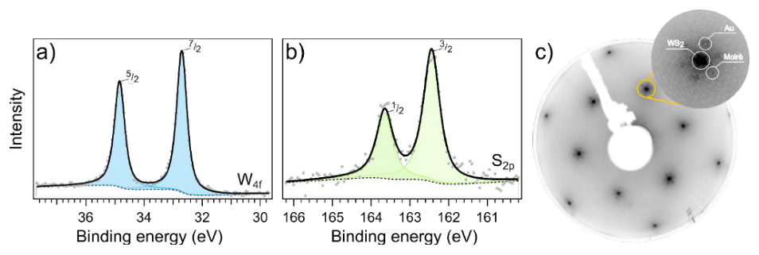
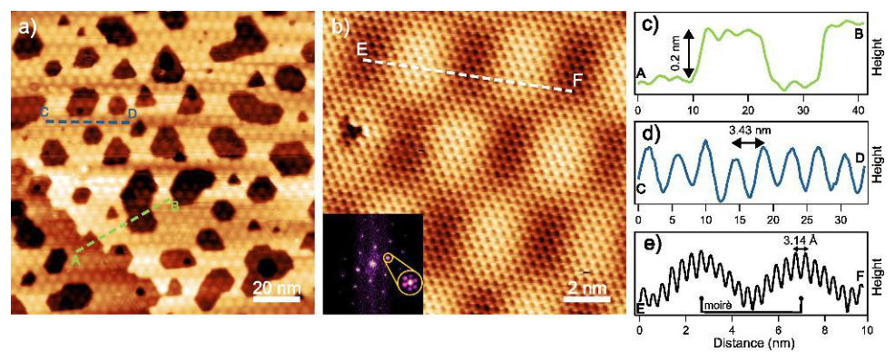
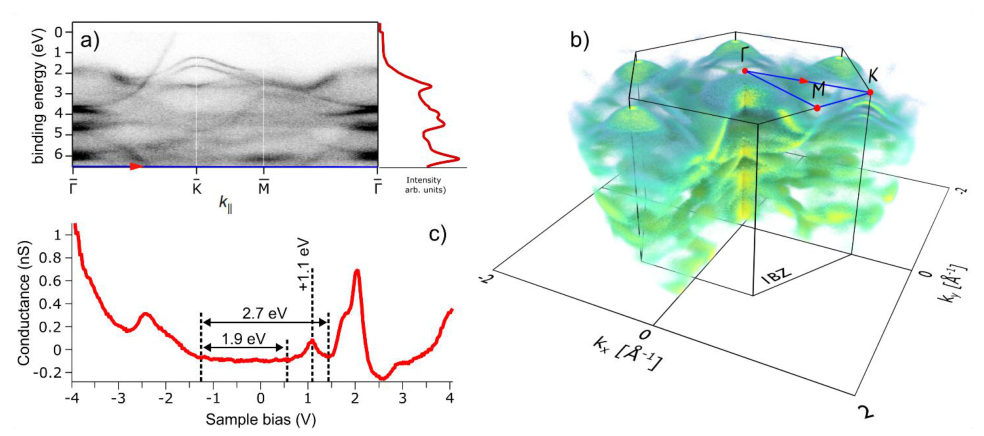
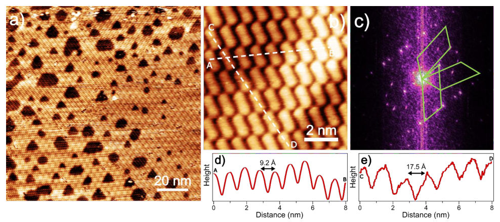
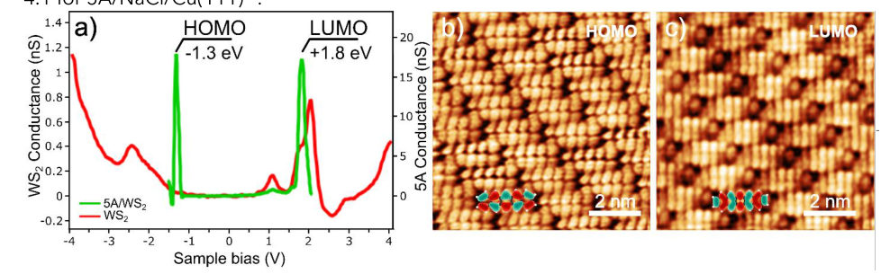
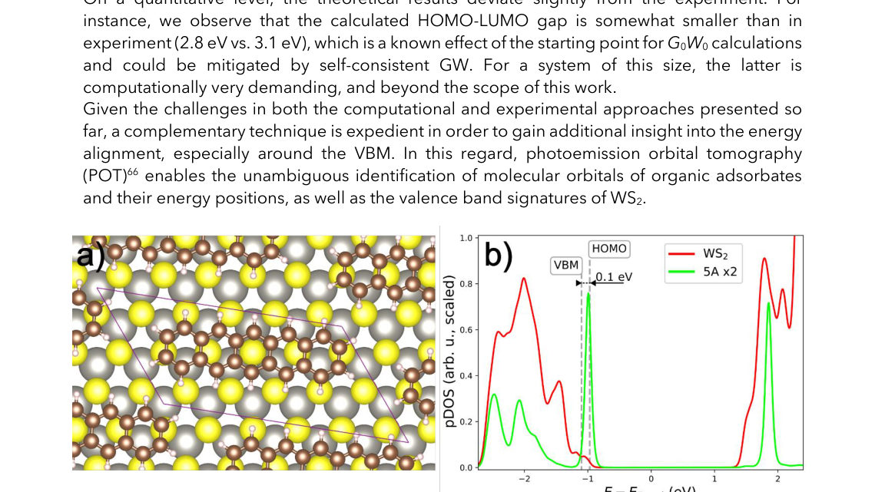
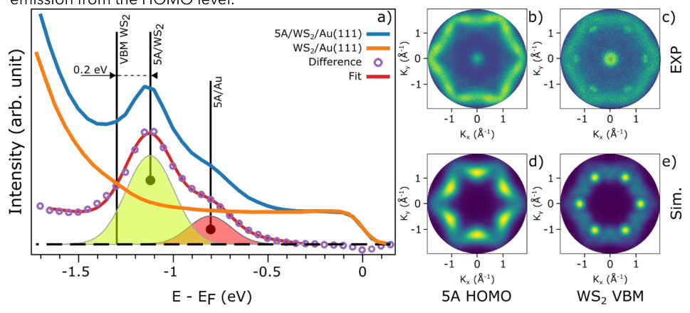
Main problem. The challenge of creating high-quality, electronically homogeneous interfaces between organic semiconductors and transition metal dichalcogenides (TMDs) using bottom-up synthesis to enable efficient charge separation.
Main result. The researchers successfully demonstrated the bottom-up growth of a highly ordered pentacene monolayer on WS2, establishing a Type-II (staggered) band alignment critical for optoelectronic applications.
Method. The study combines reactive molecular beam epitaxy (MBE) for synthesis with STM-STS, photoemission orbital tomography (POT), and G0W0 electronic structure calculations for characterization.
Summary. This paper reports the successful bottom-up synthesis of a pentacene/WS2 heterostructure using molecular beam epitaxy. By using a non-toxic sulfur source (DMDS), the authors achieved atomically flat WS2 layers that allow for a highly ordered organic molecular overlayer. Using advanced spectroscopy and many-body calculations, they confirmed a Type-II band alignment, which is essential for separating charges in future solar cells and spintronic devices. This system serves as a model platform for studying charge transfer and energy-level renormalization in 2D hybrid interfaces.
Model / system. A hybrid van der Waals heterostructure consisting of a self-assembled monolayer of pentacene (5A) on a monolayer of WS2, which is grown epitaxially on an Au(111) substrate.
Key observables. Band alignment (Type-II), HOMO-LUMO gap, WS2 transport gap, moiré periodicity, and molecular orbital momentum maps.
Important parameters / regimes. Temperature regimes of 4K, 77K, and 950K; WS2 lattice constant of ~0.314 nm; moiré periodicity of ~3.43 nm.
Assumptions / limitations. The computational model uses a supercell approach that ignores the Au substrate to manage lattice mismatch.
Figures summary. Figure 7 shows UPS spectra comparisons for pristine WS2 and pentacene, experimental and DFT-calculated momentum maps for orbital identification, and symmetrized POT data.
Paper structure. The paper introduces the problem of interface quality, describes the MBE synthesis of WS2 using DMDS, details the structural and chemical characterization (XPS, LEED, STM), presents the electronic structure analysis (STS, POT, ARPES), validates results with G0W0 calculations, and concludes with the implications for hybrid heterostructures.
Stacked van der Waals heterostructures based on transition metal dichalcogenides (TMDs) exhibit a rich variety of exotic interfacial phenomena. Substituting one component with an organic semiconductor (OSC) enables the design of hybrid heterostructures with tunable functionalities for optoelectronic, photovoltaic, and spintronic applications. In this work, exploiting scanning tunneling spectroscopy (STS), photoemission orbital tomography (POT) and G0W0 electronic structure calculations, we experimentally and theoretically demonstrate the self-assembly of an ordered single layer of pentacene (5A) above monolayer WS2, exhibiting a type-II (staggered) band alignment in the hybrid 5A/WS2 interface. Central to this result is the synthesis of extended, atomically flat WS2 - an essential prerequisite for a highly ordered and electronically homogeneous OSC/TMD interface - which can only be reliably achieved via bottom-up growth, most notably molecular beam epitaxy (MBE). We realize this by leveraging Au(111) as an atomically clean and conductive sample for epitaxial growth - a necessary requirement for reliable and comparable STS/POT characterizations. The high quality of the synthesized heterostructure, together with its type-II band alignment, establishes pentacene/WS2 as a model system for orbital-resolved studies of charge transfer, energy-level renormalization, and non-equilibrium interfacial processes in hybrid organic-inorganic-2D heterostructures.
Authors: Yueming Wang, Nan Sun, Chris Dreessen, Gaosheng Huang, Alexander Eberst, Kaining Ding, Thomas Kirchartz
Type: both · Category: other · PDF: https://arxiv.org/pdf/2604.24098v1
Analysis basis: full PDF text, analyzed in chunks









Main problem. Identifying and characterizing the mechanisms responsible for Fill Factor (FF) losses in perovskite-silicon monolithic tandem solar cells, specifically distinguishing between series resistance and the 'photoshunt' effect.
Main result. The study identifies 'photoshunt'—an illumination-dependent reduction in parallel resistance due to low charge transport layer mobility—as a critical FF loss mechanism, and shows that operating in a 'bottom-cell limited' regime can mitigate this effect.
Method. The authors combine experimental characterization (electroluminescence spectroscopy, EQE, and J-V measurements) with equivalent circuit modeling and analytical derivations to quantify resistive losses.
Summary. This paper investigates why perovskite-silicon tandem solar cells fail to reach their theoretical efficiency limits, focusing on the Fill Factor. The researchers identify a phenomenon called 'photoshunt,' where low mobility in the charge transport layers causes an apparent drop in parallel resistance under light. They demonstrate that this loss can be minimized by designing cells that are slightly limited by the bottom silicon cell's current. This work provides a roadmap for improving the efficiency of next-generation tandem photovoltaics.
Model / system. A monolithic two-terminal perovskite-silicon tandem solar cell consisting of a perovskite top cell (approx. 1.7 eV) and a silicon heterojunction bottom cell.
Key observables. Fill Factor (FF), short-circuit current density (Jsc), open-circuit voltage (Voc), series resistance (Rs), and photoshunt resistance (Rp,photo).
Important parameters / regimes. Charge transport layer mobility (mu_TL), bandgap (Eg), current matching conditions, and the radiative limit (Shockley-Queisser limit).
Assumptions / limitations. The Shockley-Queisser model assumes radiative recombination is the only recombination mechanism and assumes a standard AM1.5G solar spectrum.
Figures summary. Figure 1 shows efficiency losses relative to the SQ limit; Figure 2 shows SQ limits for varying bandgaps; Figure 3 shows EL spectra and reconstructed J-V curves; Figure 4 shows tandem efficiency and FF as functions of top-cell bandgap and photoshunt resistance; Figure 5 shows simulated J-V curves.
Paper structure. The paper begins by defining the efficiency gap relative to the SQ limit, introduces the experimental characterization via EL, presents the discovery of the photoshunt mechanism through analytical modeling, and concludes with design strategies for high-efficiency tandem cells.
Perovskite-silicon tandem technology has exceeded the single junction theoretical efficiency limit. However, there is still distance to the thermodynamic limit mainly caused by the fill factor. This work presents a methodology to illustrate the mechanisms of FF loss in perovskite-Si monolithic tandem solar cells. Apart from the series resistance related loss characterized by electroluminescence, another loss factor is from the photoshunt, a phenomenon in which the parallel resistance apparently reduces under illumination in perovskite solar cells due to the moderate charge transport layer mobility. In addoition, the two-diode property of the Si cell can also influence the FF of tandem devices. The photoshunt can be hidden when the bottom cell is over illuminated, which explains highly efficient tandem solar cells are usually bottom cell limited. This work outlines strategies that overcoming the photoshunt issue can move the perovskite top cell closer to low FF losses in tandem solar cells.
Authors: Zheng Zhang, Mingyu Xu, Jose L. Gonzalez Jimenez, Stephen Zhang, Weiwei Xie, Xianghan Xu, Daniel B. Straus
Type: experiment · Category: strongly correlated electrons · PDF: https://arxiv.org/pdf/2604.22952v1
Analysis basis: full PDF text, analyzed in chunks
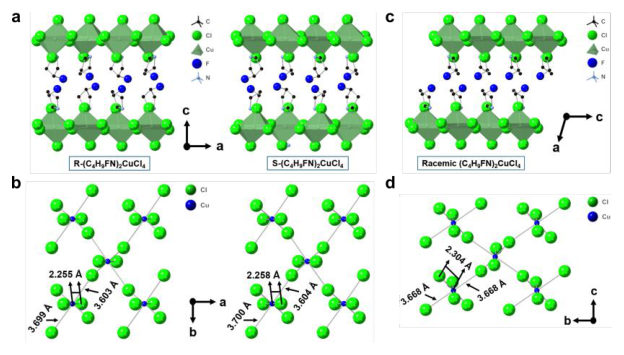
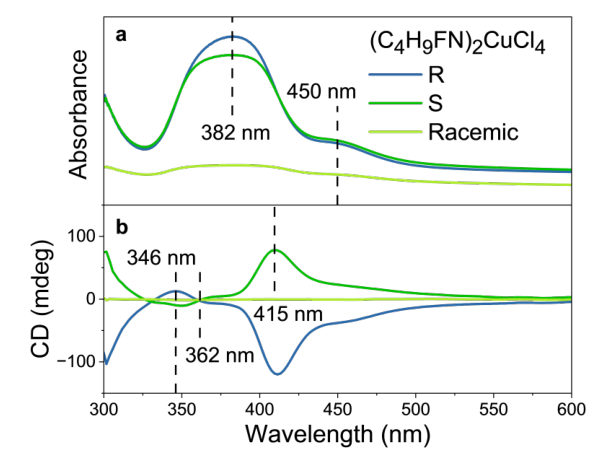
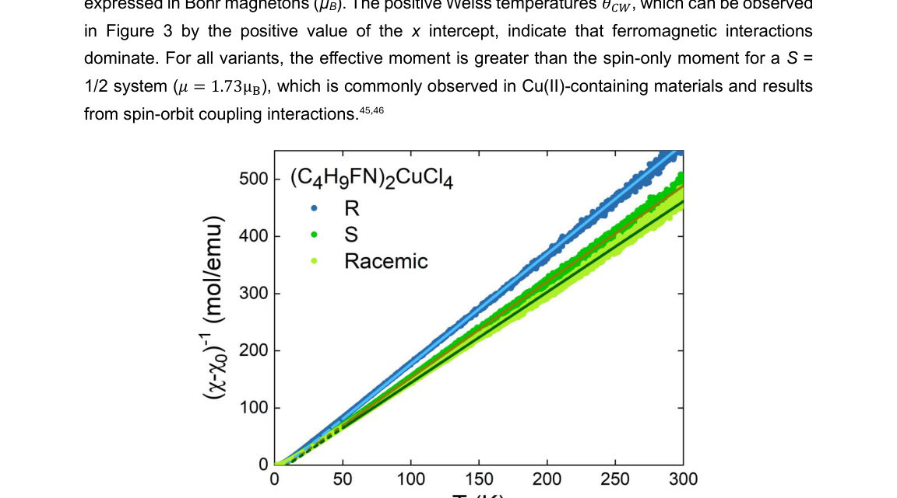
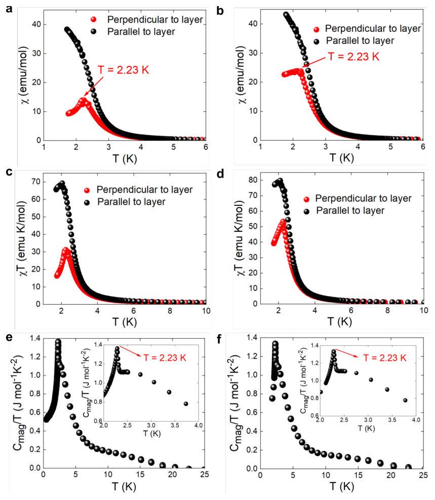
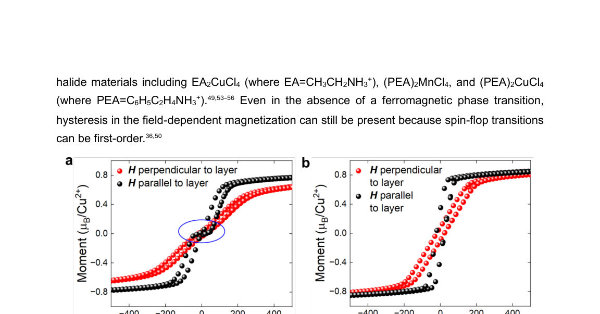
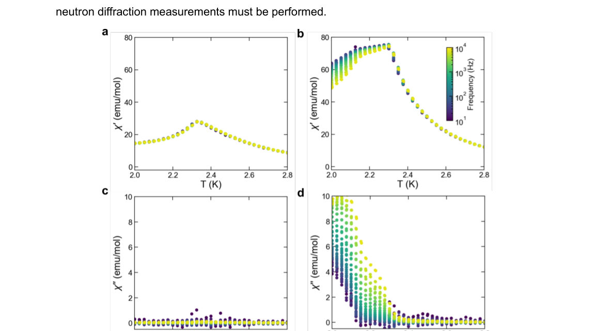
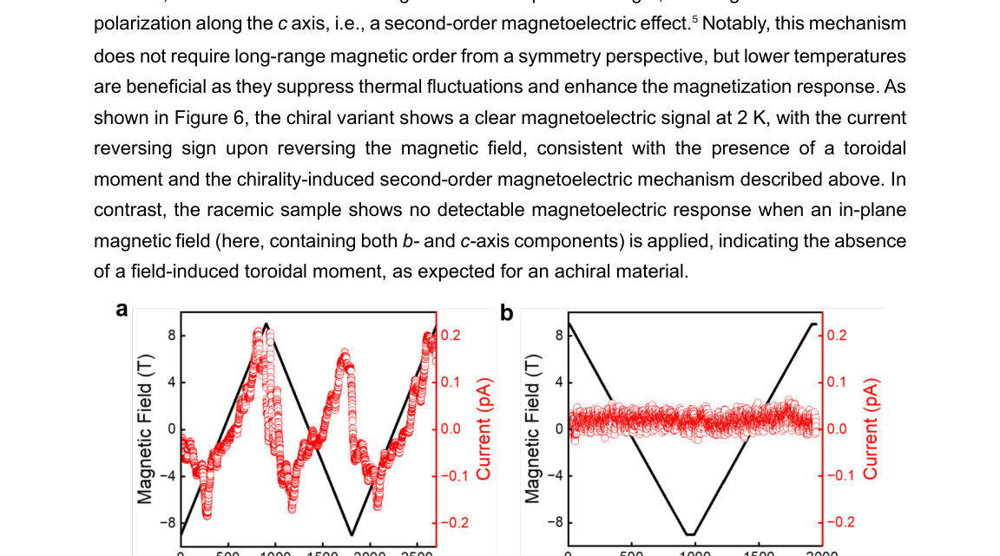
Main problem. Investigating the mechanism of chirality transfer from chiral organic cations to a structurally centrosymmetric (achiral) inorganic magnetic sublattice in a hybrid perovskite.
Main result. The chiral organic cations induce chiral magnetic order in the achiral Cu-Cl sublattice, evidenced by a second-order magnetoelectric effect present only in the enantiopure forms.
Method. Single-crystal X-ray diffraction, Circular Dichroism (CD) spectroscopy, magnetic susceptibility, specific heat capacity, and magnetoelectric current measurements.
Summary. This paper demonstrates that chirality can be transferred from organic molecules to an inorganic magnetic lattice in a hybrid perovskite. While the copper-chloride sublattice is structurally centrosymmetric, the presence of chiral cations induces chiral magnetic order. This is experimentally verified through the observation of a second-order magnetoelectric effect in the enantiopure crystals, which is absent in the racemic mixture. This finding provides a method for designing new materials with tailored chiral magnetic and optical properties.
Model / system. A 2D magnetic S=1/2 metal halide perovskite, (R)- and (S)-3-fluoropyrrolidinium copper(II) chloride, consisting of Cu-Cl inorganic layers separated by chiral organic cations.
Key observables. Néel temperature (TN), magnetoelectric signal, circular dichroism (CD) spectra, magnetic susceptibility (DC and AC), and specific heat capacity.
Important parameters / regimes. Néel temperature TN = 2.23 K, spin S=1/2, space groups P212121 (chiral) and P21/c (racemic).
Assumptions / limitations. The study assumes the observed magnetoelectric effect is a direct consequence of the induced toroidal moment from structural chirality.
Figures summary. Figure 1 shows the crystal structures of the (R), (S), and racemic variants; Figure 6 displays AC susceptibility components; Figure 7 shows the magnetoelectric signal in chiral vs. racemic samples.
Paper structure. The paper introduces the chirality transfer problem, describes the synthesis and structural characterization of the hybrid perovskite, presents magnetic and optical measurements to demonstrate chirality transfer, and concludes with the observation of the magnetoelectric effect.
Incorporating chiral organic cations into organic-inorganic hybrid materials has been shown to enable the inorganic sublattice to display chiroptical properties. We report a new two-dimensional magnetic (S=1/2) chiral metal halide material, (R)- and (S)-$(C_4H_9FN)_2CuCl_4$ (where $(C_4H_9FN)^+$ is 3-fluoropyrrolidinium), which consists of Cu-Cl inorganic layers separated by $(C_4H_9FN)^+$ organic cations. The presence of the chiral $(C_4H_9FN)^+$ organic cation induces formation of chiral magnetic order, even though the inorganic sublattice itself is structurally centrosymmetric. We also report the racemic variant, containing an equal amount of (R)- and (S)- cations, which shows no evidence of chiral magnetic order. When the magnetic susceptibility is measured perpendicular to inorganic Cu-Cl layer propagation direction, an antiferromagnetic phase transition at Néel temperature $T_N = 2.23~K$ is observed in both the chiral and racemic materials, and the existence of the magnetic phase transition is supported by specific heat capacity measurements. Field-induced magnetic chirality is observed through the existence of a second-order magnetoelectric effect in the chiral variant, while no magnetoelectric signal is observed for the racemic material, indicating the absence of magnetic chirality. Our findings demonstrate that materials exhibiting chiral magnetic order can be created through the incorporation of a chiral cation into an organic-inorganic hybrid magnetic material, potentially allowing for the design of tailored materials that combine chiral magnetism with other desirable optical and electronic properties that come from structural chirality.
Authors: A. V. Belashov, A. A. Zhikhoreva, Y. M. Beltukov, I. V. Semenova
Type: experiment · Category: disordered systems and neural networks · PDF: https://arxiv.org/pdf/2604.23244v1
Analysis basis: full PDF text, analyzed in chunks
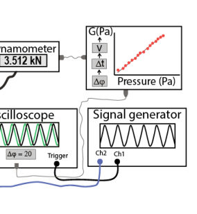
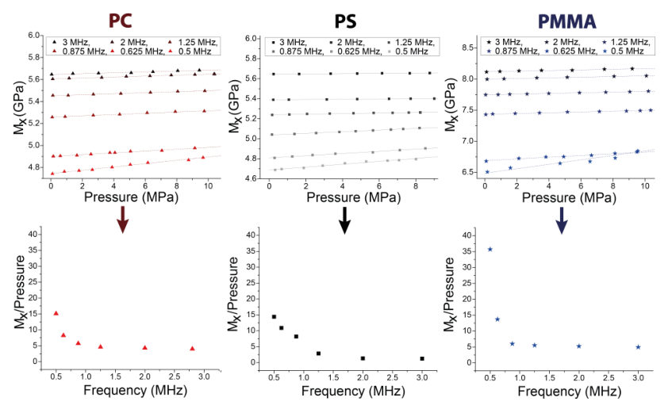
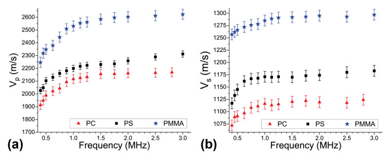
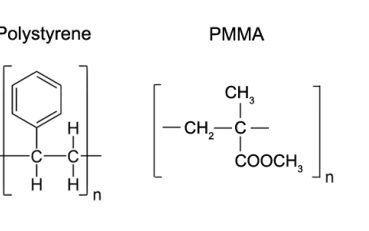
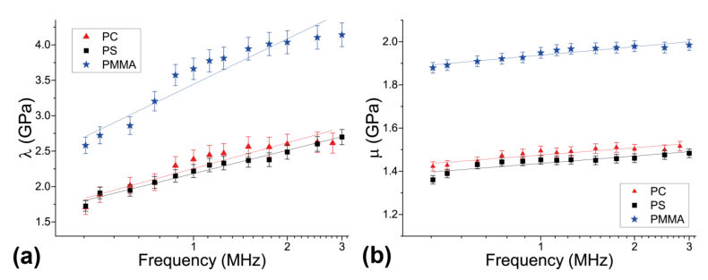
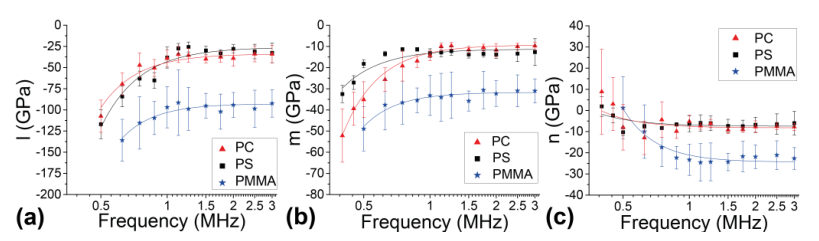
Main problem. The study addresses the lack of experimental data regarding the frequency and temperature dependence of nonlinear viscoelastic properties in glassy amorphous polymers.
Main result. Nonlinear elastic moduli exhibit much more profound frequency dependence (1.5-2.5x) than linear moduli, with significant variations occurring below 1 MHz due to relaxation processes. PMMA showed higher absolute values for both linear and nonlinear moduli compared to PC and PS.
Method. The researchers used the acousto-elastic effect to measure variations in longitudinal and shear ultrasonic wave velocities under applied static pressure (0-12 MPa) in the frequency range of 0.4-3 MHz.
Summary. This paper provides a comparative experimental analysis of the linear and nonlinear elastic properties of three common glassy polymers: PS, PC, and PMMA. Using ultrasonic wave measurements, the authors demonstrate that nonlinear moduli are much more sensitive to frequency changes than linear moduli, particularly below 1 MHz. The study identifies that PMMA's polar groups lead to higher moduli values and highlights how molecular structures influence relaxation processes. The findings help validate nonlinear viscoelastic models for amorphous materials.
Model / system. The physical system consists of three glassy amorphous polymers: Polystyrene (PS), Polycarbonate (PC), and Poly(methyl methacrylate) (PMMA). The mechanical behavior is modeled using Murnaghan's model for nonlinear elasticity, which includes five parameters (two Lamé and three Murnaghan moduli) derived from the energy density function.
Key observables. Longitudinal and shear ultrasonic wave velocities, wave packet transition times, and phase shifts under static pressure.
Important parameters / regimes. Lamé moduli (lambda, mu), Murnaghan moduli (l, m, n), frequency range (0.4-3 MHz), and the relaxation exponent (gamma between 2.4 and 2.9).
Assumptions / limitations. The polymers are assumed to have a broad spectrum of relaxation times; the applied pressure range is assumed to be within the elastic regime without irreversible deformation; and the effective elastic moduli are assumed to depend linearly on static pressure.
Figures summary. Figure 1 shows the experimental setup; Figure 2 is a flowchart of data processing; Figure 3 displays frequency dependence of wave velocities; Figure 4 shows molecular structures of the polymers; Figure 5 shows frequency dependence of moduli.
Paper structure. The paper introduces the problem of nonlinear viscoelasticity, describes the experimental setup and materials, details the mathematical models for calculating moduli, presents the frequency-dependent results and material comparisons, and concludes with a discussion on the molecular origins of the observed nonlinearities.
We present the comparative experimental analysis of frequency dependencies of linear (Lamé) and nonlinear (Murnaghan) elastic moduli of polystyrene, PMMA and polycarbonate. The measurement methodology, based on the acousto-elastic effect, provided data on variations of these moduli in block samples of the polymers in the frequency range of 0.45-3 MHz. In all the three polymers the linear Lamé moduli demonstrated moderate rise with frequency, most pronounced rise was observed in modulus $λ$ of PMMA in about 35%. The frequency dependencies of Murnaghan moduli were considerably nonlinear. At higher frequencies above ~1 MHz no significant variations of the Murnaghan moduli occurred, while at lower frequencies the absolute values of the moduli $l$ and $m$ demonstrated rapid rise, more pronounced for the modulus $l$. At the same time the absolute values of the modulus $n$ decreased and demonstrated a tendency to become positive at lower frequencies. Both linear and nonlinear moduli of PMMA had higher values than those of PC and PS, with the latter two demonstrating close values of both types of moduli. The potential origins of the differences in nonlinear elastic properties of the three polymers are discussed.
Authors: Hao Yan, Zhen-hui Qin, Zhi-Wen Wang, Shu-Mao Wu, Chen-Bei Hao, Hua-Yang Chen, Sheng-Nan Liang, Ke Chen, Si-Yuan Yu, Yan-Feng Chen
Type: both · Category: other · PDF: https://arxiv.org/pdf/2604.24309v1
Analysis basis: full PDF text, analyzed in chunks
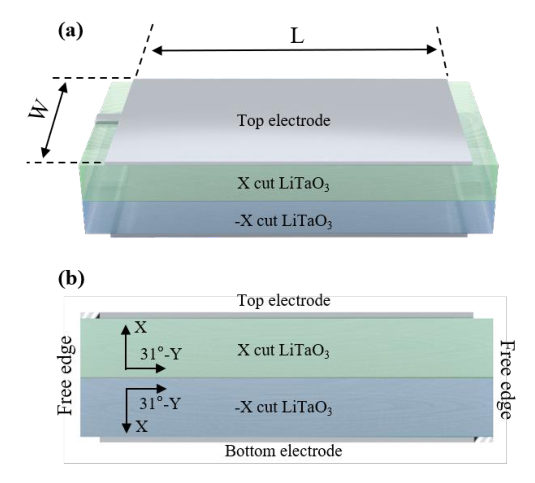
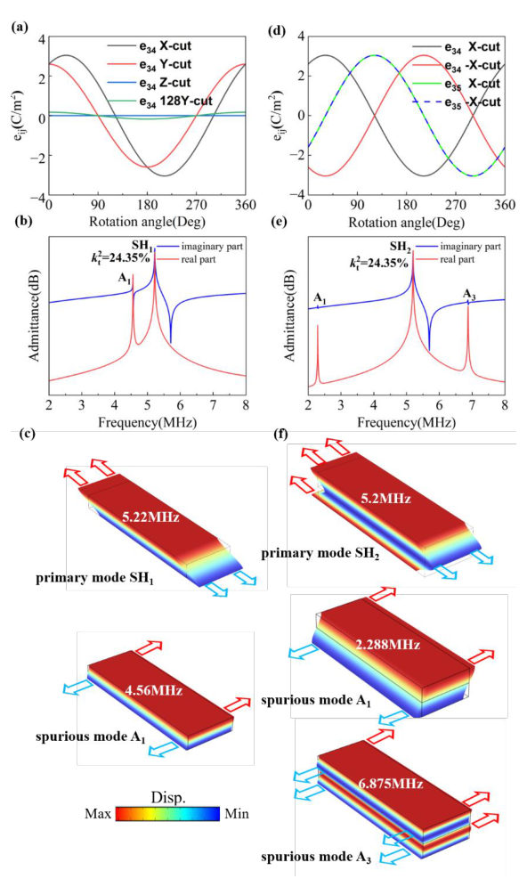
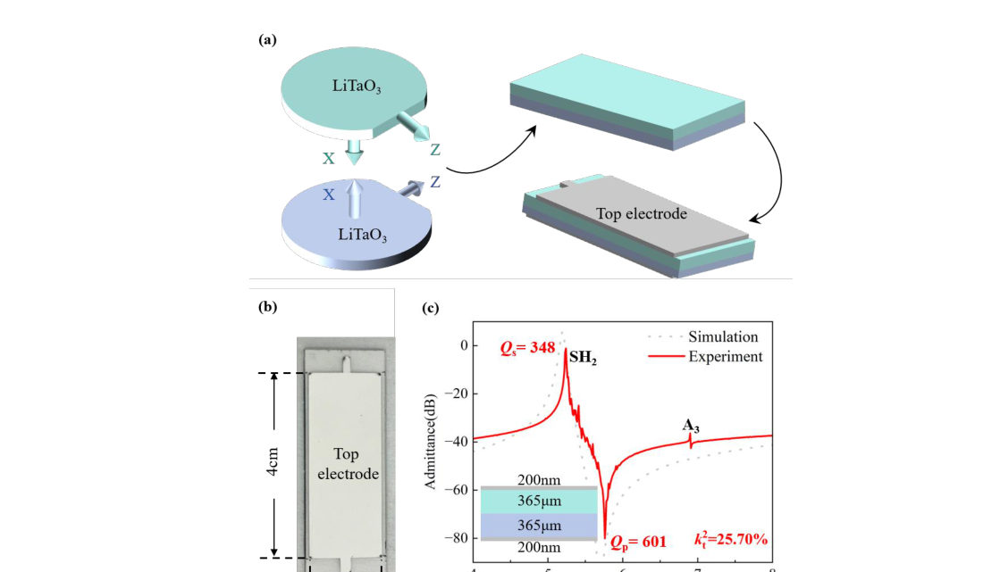
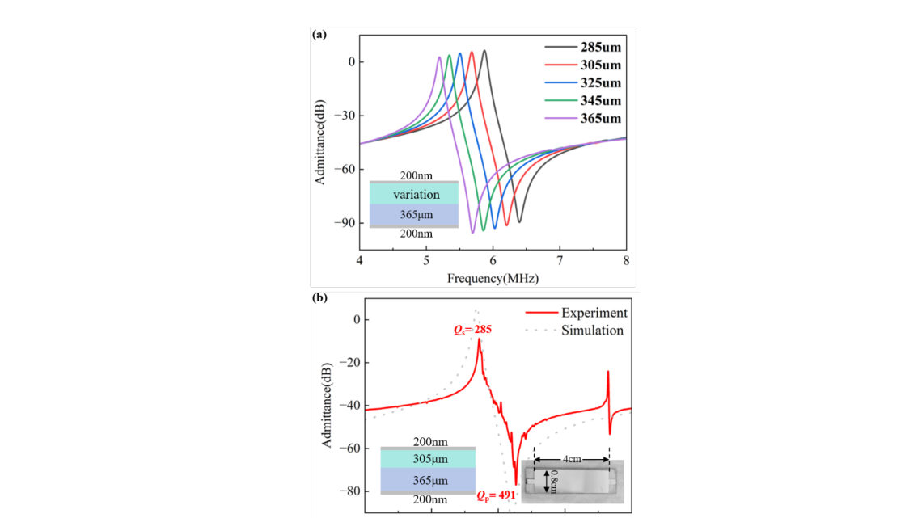
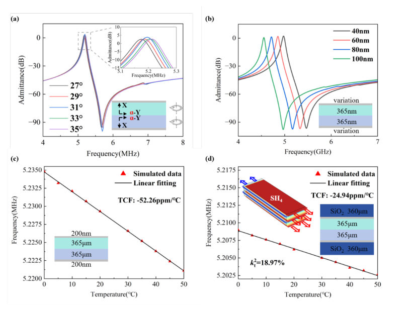
Main problem. The need to increase the electromechanical coupling coefficient (kt^2) in LiTaO3 resonators for wider bandwidth applications while simultaneously suppressing unwanted spurious modes and maintaining temperature stability.
Main result. The development of a double-layer LiTaO3 resonator with complementary polarization that achieves an ultrahigh electromechanical coupling of 25.7% and suppresses parasitic modes through symmetry-selective excitation.
Method. The researchers used rotation-bonding of two 31 deg Y-oriented LiTaO3 films with complementary (+X/-X) polarization, followed by finite-element analysis (FEA) to predict frequency scaling and temperature compensation.
Summary. This paper presents a new way to build lithium tantalate (LiTaO3) acoustic resonators by bonding two layers with opposite polarities. This specific arrangement allows for the selective excitation of a desired mode (SH2) while canceling out unwanted interference modes. The result is a record-high electromechanical coupling of 25.7%, which is crucial for creating wideband ultrasonic filters and sensors. The design is also scalable to much higher frequencies and can be made temperature-stable using a compensation layer.
Model / system. A double-layer bulk acoustic resonator consisting of two 365 um thick LiTaO3 plates rotation-bonded with an in-plane relative rotation of 121 degrees, featuring aluminum electrodes for longitudinal electric field driving.
Key observables. Electromechanical coupling coefficient (kt^2), resonance frequency (fs), quality factors (Qs and Qp), and temperature coefficient of frequency (TCF).
Important parameters / regimes. kt^2 = 25.7%, resonance frequency = 5.24 MHz, rotation angle = 121 degrees, and predicted TCF of -25 ppm/deg C with SiO2 compensation.
Assumptions / limitations. The frequency scaling assumes the ability to reduce film and electrode thickness while preserving the coupling coefficient; temperature modeling assumes known temperature-dependent material constants.
Figures summary. Fig 1 shows the 3D and cross-sectional diagrams of the resonator; Fig 2 displays piezoelectric coefficients at different rotation angles, admittance spectra for single and double-layer resonators, and displacement-field distributions for primary and spurious modes.
Paper structure. The paper introduces the problem of coupling and spurious modes, describes the fabrication and structural design of the bilayer resonator, presents experimental measurements of coupling and frequency, provides FEA simulations for scaling and temperature stability, and concludes with potential applications.
We report a structurally simple double-layer lithium tantalate (LiTaO3) bulk acoustic resonator that enables symmetry-selective excitation of the second-order thickness-shear (SH2) mode with ultrahigh electromechanical coupling. Two 31 deg Y-oriented single-crystal LiTaO3 films are rotation-bonded with complementary polarization (+X/-X) and driven by a longitudinal electric field. Matching between the effective piezoelectric symmetry and the SH2 mode yields an effective electromechanical coupling coefficient of kt^2 = 25.7% at 5.24 MHz. To our knowledge, this is the highest kt^2 reported for a LiTaO3 resonator architecture to date. The measured response is dominated by the target SH2 mode, with only weak parasitic features in the operating band. The structure is also tunable: the resonance frequency and coupling can be adjusted through geometric parameters while maintaining stable modal behavior, indicating good process tolerance. Finite-element analysis further suggests straightforward frequency scaling beyond 5 GHz by reducing the film and electrode thickness while preserving approximately 25% kt^2. In addition, introducing a SiO2 compensation layer is predicted to improve the temperature coefficient of frequency to approximately -25 ppm/deg C. These results establish complementary-polarity double-layer LiTaO3 as a practical platform for high-coupling, spurious-suppressed acoustic resonators and provide a scalable route toward wideband ultrasonic resonators, filters, and related transducers.
Authors: Saikat Roy, Yezaz Ahmed Gadi Man
Type: theory · Category: disordered systems and neural networks · PDF: https://arxiv.org/pdf/2604.23642v1
Analysis basis: full PDF text, analyzed in chunks
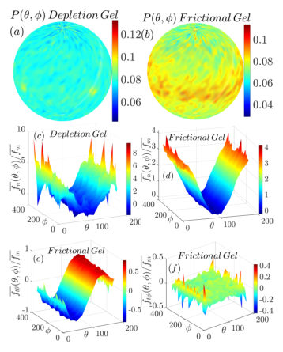
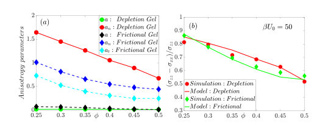
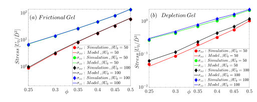
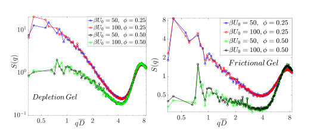

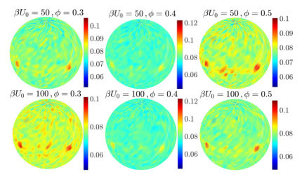
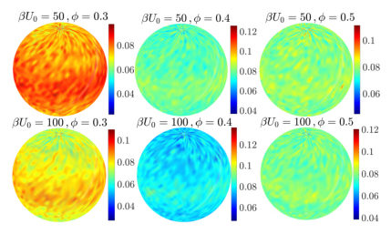
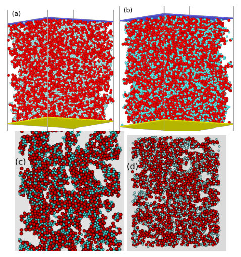
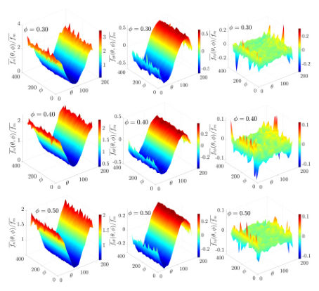
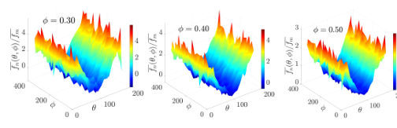
Main problem. Existing continuum theories for colloidal gels fail because they assume a stress-free reference state and affine deformation, which do not account for the inherent quenched internal stresses and structural inhomogeneities in amorphous gels.
Main result. The authors propose new constitutive relations that relate macroscopic stress to internal state parameters (force and contact anisotropy), successfully capturing the evolution of Normal Stress Difference (NSD) and demonstrating that stress anisotropy originates from the force network rather than the contact network.
Method. Large-scale 3D Langevin dynamics simulations of depletion and frictional gels using the LAMMPS code, combined with a mathematical framework involving spherical harmonic expansions of contact and force distributions.
Summary. This paper addresses the failure of traditional continuum mechanics to describe the mechanical response of colloidal gels. By accounting for the quenched internal stresses present in amorphous materials, the authors develop new constitutive relations that accurately predict macroscopic stress components and Normal Stress Differences. Through large-scale simulations, they show that stress anisotropy is driven by the force network rather than the contact network. This work provides a more robust framework for understanding the rheology of complex, disordered soft matter.
Model / system. The study uses two models of colloidal gels: depletion gels (modeled with a Morse potential for short-range attraction) and frictional gels (modeled via the Discrete Element Method with non-hydrodynamic contact friction).
Key observables. Shear modulus (Gc), axial and transverse stresses (sigma_zz, sigma_xx, sigma_yy), Normal Stress Difference (N1, N2), contact orientation distribution, and anisotropy parameters (a, an, at).
Important parameters / regimes. Volume fraction (phi), attraction strength (beta U0), coordination number (zc), and the distinction between central (depletion) and non-central (frictional) interactions.
Assumptions / limitations. The contact network is assumed to be nearly isotropic; hydrodynamic forces are neglected in the quasistatic limit; and pairwise interaction forces are assumed to be statistically independent of branch vectors.
Figures summary. Figure 1 shows contact orientation and force angular modulation; Figure 2 compares anisotropy parameter evolution; Figures 4-7 show gel structure snapshots, static structure factors, and probability density functions for bond orientations.
Paper structure. The paper begins by critiquing traditional continuum theories, introduces the proposed constitutive relations based on stressed reference states, describes the simulation models for depletion and frictional gels, presents results on stress anisotropy and force network modulation, and concludes with the validation of the new relations.
The theoretical treatment of depletion gels with central interactions often involves expanding the free energy around a stress-free reference state to derive a constitutive relation between global stress and strain. The premise upon which the previous continuum theories are based, i.e., the stress-free reference state and the affine deformation, both of which do not hold in the context of amorphous gel materials. Gels never reach a true global minimum in the potential energy landscape and contain local regions of significant compressive and tensile stress, interspersed with zero-stress regions. Hence, expansion of free energy around a stressed reference state will produce scalar terms in harmonic expansion, the effects of which are qualitatively different from the terms appearing in the expansion around an unstressed reference state. In this study, we demonstrate the limitations of traditional continuum theories and propose simple constitutive relations that better capture the mechanical response of gel materials. The robustness of the proposed relations is established through large-scale numerical simulations of depletion and frictional gels across a vast parameter space.
Authors: Ian D R Mackinnon, Jose A Alarco
Type: both · Category: strongly correlated electrons · PDF: https://arxiv.org/pdf/2604.24298v1
Analysis basis: full PDF text, analyzed in chunks
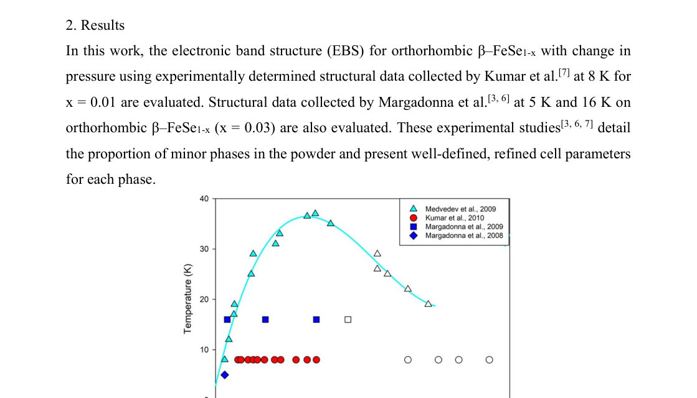
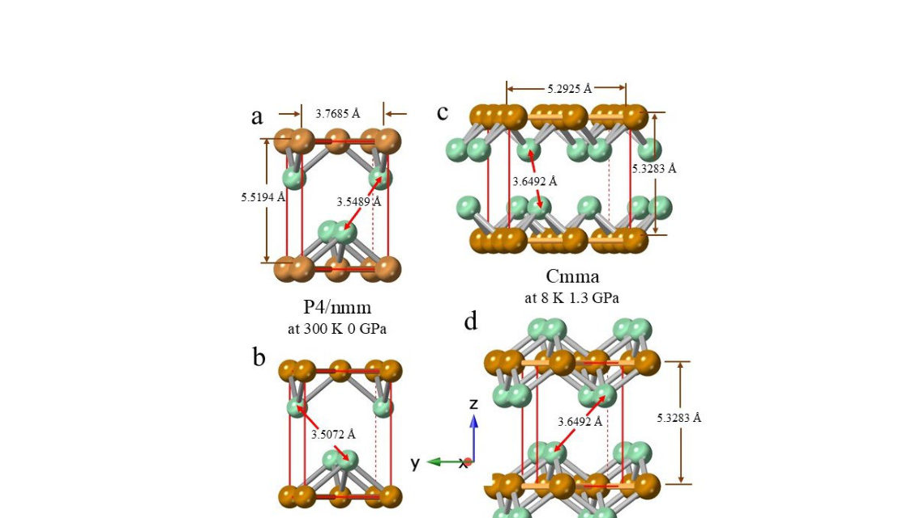
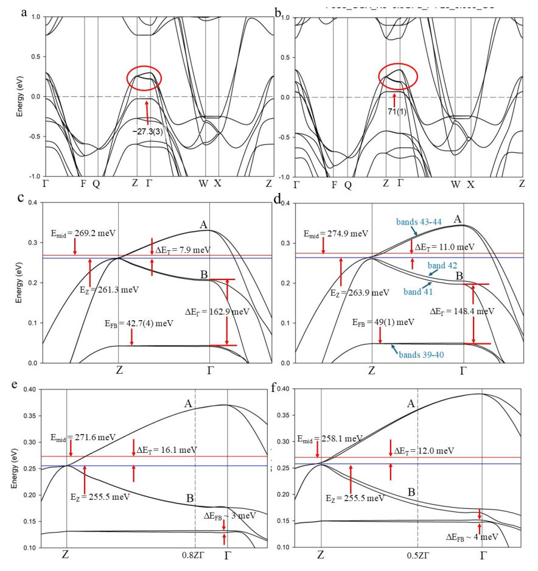
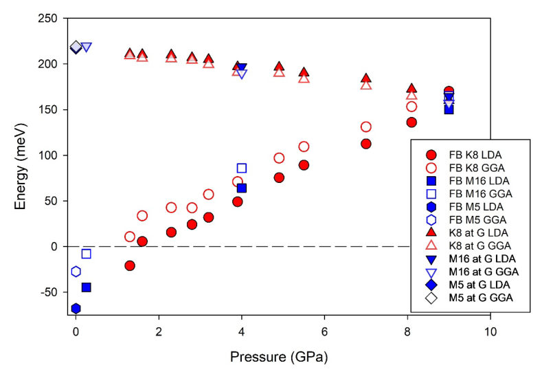
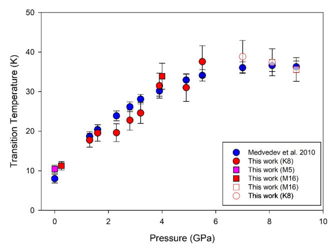
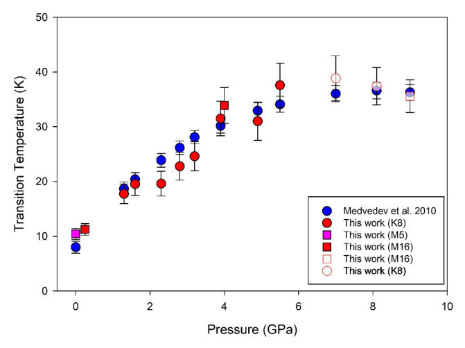
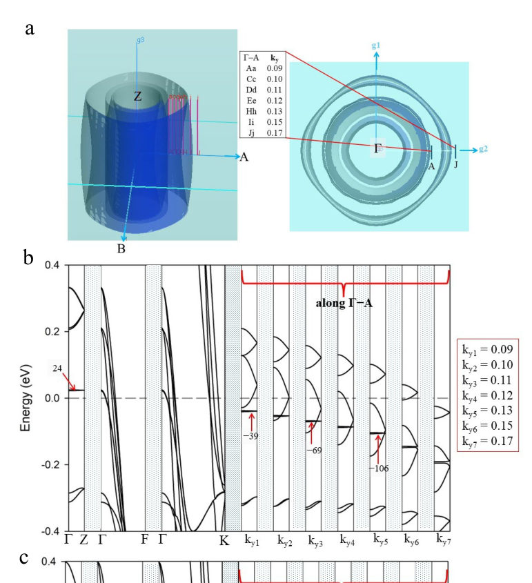
Main problem. Investigating how pressure-induced changes in the electronic band structure, specifically the interaction between flat bands and cosine-shaped bands, influence superconductivity in orthorhombic beta-FeSe1-x.
Main result. The study finds that the energy convergence of flat bands and cosine bands at approximately 9.0 GPa coincides with the experimental peak in Tc, suggesting that flat bands help enhance and sustain superconductivity up to 23 GPa.
Method. Ab initio Density Functional Theory (DFT) calculations using LDA and GGA functionals, combined with a P1 2c superlattice approach and COOP analysis.
Summary. This paper explores the relationship between electronic band topology and superconductivity in iron selenide under high pressure. It identifies that the interaction between flat bands (originating from Selenium lone pairs) and cosine-shaped bands is a key driver for the enhancement of the superconducting transition temperature. The researchers demonstrate that the peak in Tc at 9 GPa corresponds to specific band energy convergences. The study provides a microscopic view of how pressure-induced structural changes and charge transfer mechanisms sustain superconductivity up to 23 GPa.
Model / system. The physical system is orthorhombic beta-FeSe1-x (specifically x=0.01 and x=0.03) under high pressure (up to 23 GPa), focusing on the role of Selenium lone pair electrons and their impact on band topology.
Key observables. Superconducting transition temperature (Tc), superconducting gap, electronic band structures (EBS), Fermi surface topology, and electron density difference (EDD).
Important parameters / regimes. Pressure regimes from 0 to 23 GPa; temperature regimes from 5 K to 16 K; energy scales in meV.
Assumptions / limitations. Use of a P1 superlattice to moderate band intersections; reliance on experimentally determined cell dimensions for DFT input.
Figures summary. Figure 1 shows Tc vs pressure and diffraction data; Figure 2 shows crystal structure schematics; Figure 3 displays calculated band structures and FB energy shifts; Figure 4 tracks energy changes; Figure 5 compares calculated and experimental Tc; Figure 6 illustrates band intersections and Fermi surface orientations; Figure 7 shows electron density difference plots.
Paper structure. The paper introduces the problem of pressure-induced superconductivity, describes the structural and computational models (DFT/superlattice), analyzes the evolution of band structures and Fermi surfaces under pressure, discusses the role of Selenium lone pairs in bonding and charge transfer, and concludes by correlating band topology changes with experimental Tc trends.
Electronic band structures (EBSs) for orthorhombic beta FeSe1-x at less than 16 K and up to 23 GPa using experimentally determined cell dimensions are evaluated for cosine-shaped bands near, or crossing, EF. Cosine shaped bands are present in reciprocal directions parallel to the c axis at all pressures. Calculations using a P1 cell derived from Cmma symmetry with a 2c superlattice moderates the effect of intersecting bands to 9.0 GPa. This approach enables determination of a superconducting gap consistent with experimentally determined values. Key influences on charge distribution and transfer in the interplanar region of beta FeSe1-x are lone pair electrons which feature as flat bands (FBs) near EF along GZ in an EBS. FBs also influence the topology of Fermi surfaces as pressure increases and in directions parallel to the c direction (i.e. offset along ky) within the Brillouin zone. At the Fermi surface along b, cosine bands split and align favorably for electron-hole pairing with nodal inflection points located at EF. For P greater than 12.0 GPa, FBs interact with folded cosine bands invoking additional band dispersions. These calculations suggest that FBs participate in, and with increased pressure, enhance and sustain the superconducting properties of beta FeSe1-x to 23 GPa.
Authors: Huaisong Yong, Binyu Zhao
Type: theory · Category: statistical mechanics · PDF: https://arxiv.org/pdf/2604.23521v1
Analysis basis: full PDF text, analyzed in chunks
Main problem. The paper addresses the lack of an analytic theory to explain the cosolvency effect in polymer brushes, specifically how polymer chains that are poorly soluble in two pure solvents become soluble in certain mixtures.
Main result. The authors develop the first analytic theory with closed-form solutions, revealing that preferential adsorption of a cosolvent induces an effective repulsion between different types of solvated monomers, driving a discontinuous soluble transition and subsequent re-collapse.
Method. A mean-field free-energy model based on an extension of Flory-Huggins theory is used, employing perturbation expansions and Maxwell construction to determine phase boundaries.
Summary. This paper provides the first analytical framework to describe the cosolvency effect in polymer brushes. It demonstrates that the phenomenon is driven by an effective repulsion between monomers solvated by different solvents, triggered by preferential adsorption. The theory predicts a complex phase behavior including a discontinuous swelling transition followed by a re-collapse. Notably, it shows that repulsive interactions between the two solvents in the bulk are not a prerequisite for cosolvency. This work offers a theoretical foundation for designing smart, stimulus-responsive materials.
Model / system. The system consists of polymer brushes (chains end-anchored to a surface) immersed in a binary mixture of two poor solvents. The model incorporates preferential adsorption, effective monomer-monomer repulsion, and a concentration-dependent chi-function.
Key observables. Brush thickness, monomer volume fraction, effective Flory-Huggins parameter (chi-function), and phase transition boundaries (spinodal and binodal).
Important parameters / regimes. Preferential-solvation strength (epsilon_1), repulsion coupling (epsilon_2), grafting density (sigma), solvent demixing tendency (chi_s), and chemical potential (mu).
Assumptions / limitations. The theory assumes a homogeneous density profile (Alexander-de Gennes approach), an incompressible system, and identical sizes for monomers and solvent molecules.
Figures summary. Figure 1 shows a schematic of preferential solvation; Figure 2 plots the square of the external adsorption field vs. monomer density to show the effect of repulsion and grafting density; Figure 3 shows the phase transition conditions; Figure 5 presents the derived phase diagram; Figure 6 illustrates the free energy density and the role of the third virial coefficient.
Paper structure. The paper introduces the cosolvency problem, presents a mean-field free-energy framework, derives analytical solutions for the solvation and phase transitions, explores specific regimes like low grafting density and symmetric solvents, and concludes with a phase diagram and discussion of implications for material design.
We present the first analytic theory with elegant and closed-form analytical solutions to explore the cosolvency effect in polymer brushes, where polymer chains that are poorly soluble in two pure solvents become fully soluble in certain mixtures thereof. This effect is key to designing stimulus-responsive smart materials but has not previously been addressed by analytic theory for polymer brushes. Our theoretical framework reveals that preferential adsorption of cosolvent induces an effective repulsion between monomers solvated by cosolvent and those solvated by solvent. The equilibrium solvation of polymer chains by cosolvent gives rise to a concentration-dependent $χ$-function, which captures the effective interactions within the brush and reproduces the reentrant behavior characteristic of the cosolvency effect. The model predicts a discontinuous soluble transition followed by a re-collapse transition at higher cosolvent concentrations. Analytical treatment within a minimal free-energy model for the case of two symmetric poor solvents shows that the swelling and re-collapse transitions share the same thermodynamic origin. For low-density brushes, we derive an analytical approximation and delineate the phase diagram of parameter space in which discontinuous transitions occur. For cosolvency to take place, the theory specifies a minimum strength for preferential solvation and the associated repulsive coupling. Furthermore, it demonstrates that, contrary to previous models, repulsive interactions between cosolvent and solvent in the bulk are not required. This work lays the groundwork for the rational design of smart stimulus-responsive materials based on the cosolvency effect in polymer brushes, a capability which was not previously established.
Authors: Nikos Theodorakopoulos
Type: theory · Category: statistical mechanics · PDF: https://arxiv.org/pdf/2604.23771v1
Analysis basis: full PDF text, analyzed in chunks
Main problem. The original scalar Peyrard-Bishop-Dauxois (PBD) model fails to accurately predict DNA melting entropies, unzipping forces, and DNA hairpin opening rates.
Main result. By generalizing the PBD model from a 1D scalar to a 2D vector order parameter, the model achieves much better agreement with experimental values for melting entropy, unzipping force, and hairpin kinetics.
Method. The author uses an atomistic toy model to derive a vector-based Hamiltonian and employs the Transfer Integral (TI) operator method to calculate partition functions and thermodynamic quantities.
Summary. This paper proposes a new 'vector' version of the PBD model to better describe DNA melting. By treating base-pair separation as a 2D vector rather than a 1D scalar, the model accounts for the internal degrees of freedom within the base plane. This modification successfully corrects major discrepancies in predicted melting entropy and unzipping forces. Most significantly, it reduces the error in DNA hairpin opening rates from 17 orders of magnitude to a much more reasonable factor of 20.
Model / system. The system is DNA denaturation (melting) modeled as a chain of nonlinear oscillators. The new model treats each base pair as a planar vector with two independent 1D oscillators representing intra base-pair motion.
Key observables. Melting entropy, unzipping force, hairpin opening rates, melting fraction, and imino proton exchange equilibrium constants.
Important parameters / regimes. Morse potential depth (D) and width (1/alpha), stacking interaction parameters (b, k, rho), temperature (T), and salt concentration.
Assumptions / limitations. The model assumes the dynamics are restricted to a planar geometry and that the mass of the base core is much larger than the attachment masses, allowing the core to be treated as fixed.
Figures summary. Figure 1 shows the atomistic toy model of a single base plane; Figure 2 shows the melting entropy and fraction for a single PBD chain; Figure 4 shows thermodynamic integration results for AT and GC sequences.
Paper structure. The paper introduces the failure of the scalar PBD model, presents an atomistic toy model for a vector generalization, derives the new Hamiltonian, calculates thermodynamic and kinetic observables, and compares results to experimental data.
The Peyrard-Bishop-Dauxois (PBD) model of DNA denaturation, although successful in the description of melting profiles, fails to predict melting entropies, unzipping forces and dynamical properties, e.g. hairpin dynamics. The paper presents an atomistic "toy model" of the intra base-pair motion which suggests that the thermodynamics may be better described by a planar vector - rather than a scalar - order parameter. This leads to correct estimates of melting entropy, unzipping force, hairpin opening rates, and the equilibrium constant of open/closed base pair states during imino proton exchange.
Authors: Yu Xie, Rikuto Oiwa, Satoru Hayami
Type: theory · Category: other · PDF: https://arxiv.org/pdf/2604.23109v1
Analysis basis: full PDF text, analyzed in chunks
Main problem. The microscopic origin of phonon angular momentum (AM) splitting in ferroaxial systems and the mechanism by which ferroaxiality and polarity combine to create global chirality are unclear.
Main result. The authors identify that ferroaxial order creates 'hidden' sublattice-resolved chiral phonons that cancel globally, while adding polar order lifts this cancellation to produce observable global chirality.
Method. A symmetry-based framework using a Symmetry-Adapted Multipole Basis (SAMB) to decompose the force-constant matrix into bond-centered electric multipoles.
Summary. This paper proposes a new theoretical framework to understand how different types of crystal symmetry-breaking (ferroaxial and polar) affect phonon angular momentum. By decomposing force constants into electric multipoles, the authors show that ferroaxial systems possess a 'hidden' chirality that is only revealed as a global property when polar order is present. This provides a unified way to predict and control phonon properties through electronic ordering and external fields.
Model / system. A minimal 1D zigzag-chain model with two sublattices (A and B) in space group No. 51 (point group D2h), using a harmonic approximation for the potential energy.
Key observables. Phonon energy dispersion, phonon angular momentum (AM) distribution, and sublattice-resolved AM.
Important parameters / regimes. Electric and electric toroidal multipoles, isotropic and anisotropic force constants (k1, k2, k'1, k'2), and ferroaxial/polar order parameters.
Assumptions / limitations. The study is restricted to the harmonic approximation (second-order expansion) and assumes a bond-based formulation where energy depends on relative displacements.
Figures summary. Fig 1 shows schematics of isotropic and anisotropic interactions via multipoles; Fig 2 displays the 1D zigzag chain and its phonon dispersion; Fig 3 illustrates electric toroidal dipoles and the distribution of sublattice-resolved AM.
Paper structure. The paper introduces a new symmetry-based framework (SAMB), applies it to a 1D zigzag chain model, analyzes the emergence of hidden chirality in ferroaxial states, and demonstrates how polar contributions lead to global chirality.
We propose a symmetry-based framework for constructing effective harmonic phonon models using a symmetry-adapted multipole basis. By decomposing the force-constant matrix into bond-centered electric multipoles, we identify the minimal microscopic ingredients responsible for phonon angular-momentum splitting. Applying this framework to a minimal zigzag-chain model, we show that ferroaxial order gives rise to a hidden sublattice-resolved chiral phonons, while an additional polar contribution leads to finite global chirality. Our results provide a unified symmetry-based description of hidden and emergent phonon phenomena and suggest a route to control phonon properties via electronic orderings and external fields.
Authors: Sergey Kovalev, Hassan A. Hafez, Klaas-Jan Tielrooij, Jan-Christoph Deinert, Igor Ilyakov, Nilesh Awari, David Alcaraz, Karuppasamy Soundarapandian, David Saleta, Semyon Germanskiy, Min Chen, Mohammed Bawatna, Bertram Green, Frank H. L. Koppens, Martin Mittendorff, Mischa Bonn, Michael Gensch, Dmitry Turchinovich
Type: both · Category: other · PDF: https://arxiv.org/pdf/2604.24651v1
Analysis basis: full PDF text, analyzed in chunks
Main problem. Achieving efficient, electrical control over the large nonlinear terahertz (THz) response in graphene for applications in high-frequency electronics.
Main result. Graphene's THz nonlinearity can be tuned by a factor of ~70 using low gating voltages (a few volts), with optimal gating enhancing third-harmonic generation efficiency by approximately two orders of magnitude.
Method. The study uses nonlinear THz spectroscopy, including THz pump-probe and multi-cycle THz time-domain spectroscopy, combined with a thermodynamic model of carrier heating and cooling.
Summary. This paper demonstrates that the massive nonlinear optical response of graphene in the terahertz regime can be electrically tuned using very low voltages. By adjusting the Fermi energy through gating, the researchers achieved a 70-fold modulation in THz transmission and a 100-fold increase in third-harmonic generation efficiency. The mechanism is driven by the ultrafast heating and subsequent cooling of the electronic population. This work provides a foundation for developing highly efficient, voltage-controlled graphene-based components for ultra-high-frequency signal processing.
Model / system. The system is CVD-grown monolayer graphene on a quartz substrate, controlled via a polymer electrolyte gate. The physical model is a single-band thermodynamic approach describing the interplay of THz-induced electronic heating and phonon-mediated cooling.
Key observables. THz third-harmonic generation (THG) efficiency, THz saturable absorption, differential transmission (delta T/T0), and carrier temperature (Te).
Important parameters / regimes. Fermi energy (E_F) between 50 and 200 meV, peak electric field strengths up to 80 kV/cm, and momentum scattering time (tau) dominated by long-range Coulomb scattering.
Assumptions / limitations. The single-band model assumes carrier density conservation and is valid when E_F > k_B Te; the modulation speed is currently limited by the polymer electrolyte gate.
Figures summary. Figure 1 shows THz waveforms and the temporal modulation of conductivity/absorbance; Figure 3 illustrates harmonic electric field enhancement; Supplementary figures show conductivity spectra, electronic temperature evolution, and Hall measurement validation.
Paper structure. The paper introduces the problem of THz nonlinearity in graphene, describes the experimental setup and gating mechanism, presents results for both single-cycle and multi-cycle pulses, validates the findings with a thermodynamic model, and concludes with implications for high-frequency device design.
Graphene is conceivably the most nonlinear optoelectronic material. Its nonlinear optical coefficients in the terahertz (THz) frequency range surpass those of other materials by many orders of magnitude. This, in particular, allows one to use graphene for extremely efficient up-conversion of sub-THz electronic input signals into the THz frequency range at room temperature and under ambient conditions, thus paving the way for practical graphene-based ultrahigh-frequency electronic technology. Here, we show that the THz nonlinearity of graphene can be efficiently controlled using electrical gating, with gating voltages as low as a few volts. For example, optimal electrical gating enhances the power conversion efficiency in THz third-harmonic generation in graphene by about two orders of magnitude. This essentially converts graphene from an almost perfectly linear, inert electronic material to a material with the highest possible THz nonlinearity. We demonstrate gating control of THz nonlinearity of graphene for both ultrashort single-cycle and quasi-monochromatic multi-cycle input signals. Our experimental results are in quantitative agreement with a physical model of graphene nonlinearity, describing the time-dependent thermodynamic balance maintained within the electronic population of graphene during interaction with ultrafast electric fields. Our results can serve as a basis for straightforward and accurate design of devices and applications for efficient electronic signal processing in graphene at ultra-high frequencies.
Authors: Niloufar Dadkhah, Walter R. L. Lambrecht
Type: theory · Category: other · PDF: https://arxiv.org/pdf/2604.24585v1
Analysis basis: full PDF text, analyzed in chunks
Main problem. The study investigates the evolution of electronic and optical properties of arsenic monolayers as they undergo a structural transition from a puckered alpha-phase to a flat honeycomb phase under biaxial strain.
Main result. The researchers found that quasiparticle corrections reveal an indirect band gap and significant p-d orbital hybridization, and that biaxial strain induces a transition where the lowest exciton shifts from bright to dark.
Method. The study uses Density Functional Theory (DFT) with LDA, many-body perturbation theory via the quasi-particle self-consistent GW (QSGW) and QSW methods, and the Bethe-Salpeter Equation (BSE) for optical response.
Summary. This paper explores how the electronic and optical properties of arsenic monolayers change when they are flattened by biaxial strain. Using advanced many-body methods, the authors show that while simple models predict a direct gap, more accurate calculations reveal an indirect gap and significant orbital hybridization. They also demonstrate that strain can turn bright excitons into dark ones, providing insight into the tunable optoelectronic properties of 2D materials.
Model / system. The physical system is a monolayer of arsenic (As), a Group-V element, studied in two structural phases: a puckered alpha-phase (similar to black phosphorus) and a flat honeycomb structure.
Key observables. Band gaps (direct and indirect), orbital composition (p and d character), exciton binding energies, optical anisotropy (x vs y polarization), and exciton brightness.
Important parameters / regimes. Biaxial strain levels, spin-orbit coupling (SOC), and in-plane/out-of-plane bond lengths and angles.
Assumptions / limitations. The study assumes the validity of the LDA and QSGW approximations for electronic structure and the BSE for electron-hole interactions.
Figures summary. Figure 1 shows the crystal structure and Brillouin zone; Figure 2 compares LDA, QSGW, and QSW band structures; Figure 3 shows SOC effects; Figure 4 shows orbital-resolved bands; Figure 5 compares dielectric functions (IPA vs BSE); Figures 6-7 show k-space distribution of excitons; Figures 10-13 show band structure evolution under strain and Brillouin zone folding.
Paper structure. The paper begins with structural characterization, moves to electronic structure calculations (LDA, QSGW, and SOC effects), analyzes orbital hybridization, investigates optical properties and excitonic effects, and concludes with a study of the phase transition under biaxial strain.
Group-V monolayer materials exhibit intriguing electronic and optical properties, influenced by their unique crystal symmetries and structural phases. In this work, we study arsenic monolayers, investigating their electronic and optical properties across different phases, including planar, and puckered forms, using density functional theory (DFT) and quasi-particle self-consistent $GW$ (QS$GW$) methods, with and without vertex contributions (ladder diagrams) and examine the effects of spin-orbit coupling and the orbital composition of the bands. The Bethe-Salpeter equation (BSE) method is used to study the optical response and the band origin of the low lying excitons is determined. The gradual transformation from the puckered $α$-phase to the flat honeycomb structure is studied under biaxial strain and the evolution of the band structure and optical response is described in terms of band inversions of bands of different orbital character.
Authors: Joshua R. Evans, Diego A. Garibay, Aiden N. Kuhls, Mehmet Z. Baykara
Type: experiment · Category: other · PDF: https://arxiv.org/pdf/2604.23391v1
Analysis basis: full PDF text, analyzed in chunks
Main problem. The difficulty of identifying the chemical identity and electronic nature of atomic-scale defects in MoS2 under realistic, ambient conditions without the need for ultra-high vacuum environments.
Main result. The researchers successfully categorized and chemically identified various defects (n-type/p-type metal substitutions and oxygen substitutions) using a new C-AFM spectroscopy method, specifically identifying point defects as oxygen substitutions rather than sulfur vacancies.
Method. A new 'Discrete I-V spectroscopy' approach using Conductive Atomic Force Microscopy (C-AFM) under ambient conditions, involving high-speed scanning of current maps at discrete bias voltages and polynomial fitting to extract differential conductance.
Summary. This paper presents a new method for performing electronic spectroscopy on individual atomic defects in MoS2 under ambient conditions using C-AFM. By using a 'discrete I-V spectroscopy' technique, the authors can identify the chemical nature of defects, such as distinguishing between n-type/p-type metal substitutions and oxygen substitutions. This approach avoids the need for ultra-high vacuum environments, making it highly relevant for studying 2D materials in practical device-operating conditions. The study provides a way to map the electronic density of states of defects with high spatial resolution.
Model / system. The physical system is molybdenum disulfide (MoS2) thin films, specifically focusing on atomic-scale defects including transition metal substitutions (Re, V, Nb) and oxygen substitutions at sulfur sites.
Key observables. Local conductivity, differential conductance (dI/dV-V), current maps, and spatial morphology of electronic perturbations.
Important parameters / regimes. Ambient conditions (22-23 C, 20-50% humidity), scan sizes from 10x10 nm2 to 150x150 nm2, and defect densities ranging from 10^11 to 10^12 cm-2.
Assumptions / limitations. The study assumes that the electronic signatures (dI/dV-V) can be reliably compared to existing STM and DFT data to achieve chemical identification.
Figures summary. Fig 1 shows atomic-resolution current maps of single-atom and larger defects; Fig 2 displays current maps at different bias polarities showing changes in spatial morphology; Fig 3 presents I-V curves and derived differential conductance spectra for identified defects; Fig 4 demonstrates the identification of oxygen substitutions via current attenuation and lack of in-gap states.
Paper structure. The paper introduces the problem of defect characterization, describes the new C-AFM discrete I-V spectroscopy methodology, presents the categorization of substitution defects, details the identification of oxygen-based point defects, and concludes with a comparison of findings to existing literature.
Transition metal dichalcogenides (TMDs) attract significant attention as potential building blocks in next-generation electronic devices. On the other hand, a comprehensive understanding of how various defects affect local electronic properties under realistic operational conditions is yet to be formed. Here, we present results of electronic spectroscopy experiments performed on individual defects in the prototypical TMD molybdenum disulfide (MoS2) under ambient conditions, by way of conductive atomic force microscopy (C-AFM). Data acquired in the form of consecutive, high-resolution current maps at various bias voltages allow the assessment of local conductivity and differential conductance as a function of bias voltage for individual defects, the effects of which range from single atomic sites to several nanometers in lateral size. Characteristic behavior in spectroscopy data allows the categorization of observed defects into distinct groups, and their chemical identification as n-type and p-type transition metal substitutions of molybdenum atoms, as well as oxygen substitutions of sulfur atoms.
Authors: Matthias Kellner, Teitur Hansen, Thomas Bligaard, Karsten Wedel Jacobsen, Michele Ceriotti
Type: both · Category: disordered systems and neural networks · PDF: https://arxiv.org/pdf/2604.24607v1
Analysis basis: full PDF text, analyzed in chunks
Main problem. Machine-learning interatomic potentials (MLIPs) accurately mimic their DFT training references but fail to account for the inherent errors in the underlying electronic structure approximations relative to experimental reality.
Main result. The authors developed PET-UAFD, an ensemble of MLIPs calibrated against experimental data, which provides accurate predictions for liquid densities and structural properties while using the ensemble spread to quantify uncertainty relative to experiment.
Method. The framework uses an uncertainty-aware functional distribution approach (UAFD) to train an ensemble of MLIPs on various DFT functionals and employs the PET-EXP protocol (statistical reweighting) for efficient uncertainty quantification.
Summary. This paper presents a new way to make machine-learning potentials truly predictive by calibrating them against experimental data rather than just approximate DFT calculations. By using an ensemble of models representing different levels of DFT theory, the authors can estimate how much a prediction might deviate from physical reality. They introduce an efficient protocol (PET-EXP) that allows for this uncertainty quantification at almost no extra computational cost. The method successfully predicts the properties of various liquids and provides a reliable way to assess the trustworthiness of atomistic simulations.
Model / system. The study utilizes the Point Edge Transformer (PET) architecture to create universal MLIPs trained on an ensemble of DFT functionals (PBE, PBEsol, PBE+U, r2SCAN, r2SCAN-D3) applied to various solids and liquids.
Key observables. Atomization energies, cohesive energies, lattice constants, bulk moduli, liquid densities, and radial distribution functions (RDFs).
Important parameters / regimes. A fixed local cutoff radius of 4.5 Angstroms; ensemble weights (w0 to w4); temperature and pressure in NPT ensembles.
Assumptions / limitations. The error in the MLIP is primarily driven by the variation in the underlying DFT functional space; the predictive distribution can be estimated by sampling specific unit vector points.
Figures summary. Plots of normalized errors vs. predicted uncertainties; radial distribution functions (RDFs) for various liquids with shaded uncertainty bands; PCA analysis of atomic environments; and parity plots comparing predictions to experimental values.
Paper structure. The paper introduces the problem of DFT-inherent error, describes the PET-UAFD and PET-EXP frameworks, presents calibration results on static solid properties, demonstrates transferability to liquid structures and densities, and discusses the computational efficiency and physical origin of prediction errors.
Machine-learning models of atomic-scale interactions achieve the accuracy of the quantum mechanical calculations on which they are trained, but at a dramatically lower computational cost. Their predictions can be made trustworthy by uncertainty quantification techniques that estimate the residual error relative to their reference. These errors, however, do not include uncertainty contributions from the approximations inherent in the electronic structure calculations, which are often the main source of discrepancy with empirical observations. We construct an ensemble of ML potentials trained on multiple electronic-structure references and calibrate it against experimental data on cohesive energies, atomization energies, lattice constants and bulk moduli of simple materials and molecules, similar to the uncertainty-aware functional distribution approach. The resulting ensemble of models, which we call PET-UAFD, can be used to simulate matter across a wide range of compositions and thermodynamic conditions. By comparison with experimental measurements of the density and structure of liquids, we demonstrate that, even outside the static properties on which it was calibrated, PET-UAFD enables predictions that are as accurate against experiments as the best available electronic-structure reference and that the spread in the ensemble can be used to assess the reliability of such predictions. We also introduce the PET-EXP protocol that uses shallow ensembles and statistical reweighting techniques to provide accurate estimates of uncertainty relative to experimental measurements at virtually no additional cost over a simulation based on a single conventional ML potential. Ultimately, this approach provides a practical and inexpensive approach to elevate machine-learning potentials from faithful interpolators of approximate theories to genuinely predictive tools anchored in experimental reality.
Authors: Carl Peterson, Chinmoy Nath Saha, Yizheng Liu, James S. Speck, Sriram Krishnamoorthy
Type: experiment · Category: other · PDF: https://arxiv.org/pdf/2604.24190v1
Analysis basis: full PDF text, analyzed in chunks

Main problem. Investigating the origin and extent of anisotropic, micron-scale ion damage in beta-Ga2O3 epitaxial layers caused by sputtering and ICP etching processes.
Main result. Ion damage is highly orientation-dependent, causing significant charge depletion (up to 11.5 um deep) and increased on-resistance in (010), (110), and (011) orientations, while the (001) orientation remains largely unaffected due to ion channeling effects.
Method. Experimental characterization using J-V and high-voltage C-V measurements on NiOx heterojunction p-n diodes, Schottky barrier diodes, and MOSCAPs subjected to RF sputtering and BCl3-based ICP etching.
Summary. This paper demonstrates that common fabrication processes like sputtering and plasma etching cause significant, deep-seated damage in specific crystal orientations of beta-Ga2O3. While the (001) orientation is resistant, the (010), (110), and (011) planes suffer from massive charge depletion and increased resistance. The authors suggest this is due to ions channeling through open paths in the crystal structure. This finding is critical for developing reliable power electronics using beta-Ga2O3.
Model / system. Beta-Ga2O3 (ultra-wide bandgap semiconductor) epitaxial layers with various crystallographic orientations: (001), (010), (110), and (011).
Key observables. Specific on-resistance (Ron,sp), net donor concentration (ND - NA), charge depletion depth, and Schottky barrier height (Von).
Important parameters / regimes. Depletion depth up to 11.5 um, reduction in net donor concentration by 85-91%, and increase in Ron,sp by up to 9.4x.
Assumptions / limitations. The damage is attributed to energetic ions traveling through open crystal channels along the [010] direction and creating compensating point defects.
Paper structure. The paper introduces the problem of anisotropic damage, details the fabrication and etching processes, presents electrical characterization results (J-V and C-V) for different orientations, and concludes with a proposed mechanism involving ion channeling and defect creation.
We report on the experimental observation of up to 11.5 $μm$ deep charge depletion in (010), (110), and (011) $β-Ga_2O_3$ epitaxial layers due to ion damage from sputtering and inductively coupled plasma (ICP) etching processes whereas charge depletion in (001) $β-Ga_2O_3$ epitaxial layers was minimal. The orientation-dependent reduction in CV-measured charge density was first observed in $NiO_x$ reactively sputtered heterojunction p-n diodes (HJDs). When compared to reference low-damage Schottky barrier diodes (SBDs), the sputtered HJDs showed a $9.4{\times}$ increase in the specific on resistance $(R_{on,sp})$ and 85% reduction in net donor concentration $(N_D - N_A)$ at zero bias for sputter-damaged HJDs on (010) epitaxial layers whereas HJDs on (001) remained unchanged. Similarly, sputtered SiO2 caused a reduction of $N_D - N_A$ 11.5 $μm$ deep into the (010) material. Next, SBDs were fabricated on $β-Ga_2O_3$ surfaces previously etched via a BCl3 based ICP process and compared to SBDs on un-etched surfaces. The (010) SBDs on etched surfaces exhibited a $7.7{\times}$ increase in $R_{on,sp}$ and a 91% reduction in $N_D - N_A$ at zero bias where the (001) etched diodes exhibited little change. Additionally, (110) and (011) diodes fabricated on ICP damaged surfaces also saw a ~82% reduction in $N_D - N_A$ at zero bias, indicating (110) and (011) are also susceptible to ion damage. Damage in the (010), (110), and (011) diodes is potentially caused by energetic ions that travel into the open channels present along the [010] direction and create compensating point defects which could potentially diffuse further.
Authors: Shivam Tripathi, Jatin Kawatra, Varun Malviya, Krishna Mehta
Type: theory · Category: disordered systems and neural networks · PDF: https://arxiv.org/pdf/2604.23369v1
Analysis basis: full PDF text, analyzed in chunks
Main problem. Calculating vibrational entropy using first-principles phonon methods is computationally expensive, creating a bottleneck for high-throughput materials discovery.
Main result. The authors developed a highly accurate, interpretable log-linear model and a temperature-dependent formulation that predicts vibrational entropy using atomic volume as the primary descriptor.
Method. The study combines a feedforward neural network trained on Materials Project and PhononDB descriptors with SHAP analysis and least-squares regression to derive simplified analytical models.
Summary. This paper presents a way to bypass expensive phonon calculations by using machine learning and simple analytical models to predict vibrational entropy. By analyzing a large dataset, the authors found that atomic volume is the most important factor governing this property. They developed a new log-linear model and a temperature-dependent framework that captures both low-temperature Debye-like and high-temperature Einstein-like behavior. This approach enables much faster, large-scale screening of materials for thermodynamic stability.
Model / system. The study analyzes a dataset of 9,866 crystalline materials, utilizing a single-hidden-layer neural network and a log-linear model relating vibrational entropy to atomic volume.
Key observables. Vibrational entropy (S_vib)
Important parameters / regimes. Atomic volume, temperature (100-500 K), transition temperature (T* = 200 K), and Debye/Einstein temperature regimes.
Assumptions / limitations. The study operates within the harmonic approximation and assumes atomic volume serves as a sufficient effective descriptor for mass and bonding strength.
Figures summary. Figure 1 shows a parity plot of predicted vs actual S_vib; Figure 2 ranks feature importance via SHAP; Figure 3 compares linear, logarithmic, and log-linear models; Figure 4 shows parity plots for the temperature-dependent model.
Paper structure. The paper introduces the computational bottleneck of phonon calculations, describes the dataset and neural network architecture, uses SHAP analysis to identify atomic volume as the key driver, presents the derivation of a simplified log-linear model, introduces a temperature-dependent formulation, and validates the models via parity plots and error analysis.
Vibrational entropy plays a central role in determining phase stability and temperature dependent behavior in materials, yet its calculation from first-principles phonon methods remains computationally demanding. In this work, we combine data-driven modeling with physically motivated analysis to develop an efficient and interpretable framework for predicting vibrational entropy. Using a dataset derived from PhononDB, a feedforward neural network trained on Materials Project and composition based descriptors achieves high predictive accuracy, while SHAP analysis identifies atomic volume as the dominant factor governing vibrational entropy. Guided by this insight, simplified analytical models are constructed, revealing a logarithmic dependence of vibrational entropy on atomic volume consistent with lattice dynamical considerations. A logarithmic linear model is shown to provide an accurate and physically interpretable description across the full range of materials. To extend the analysis to finite temperatures, a temperature dependent formulation is introduced that incorporates T3 scaling at low temperatures and logarithmic dependence at higher temperatures, consistent with Debye and Einstein type behavior. This unified model captures both structural and thermal contributions to vibrational entropy with good accuracy. Overall, the proposed framework demonstrates that vibrational entropy can be predicted using simple, physically meaningful relationships, offering a computationally efficient alternative to full phonon calculations and enabling entropy informed materials screening.
Authors: Sourav Sarkar, Kalyan Mandal
Type: experiment · Category: other · PDF: https://arxiv.org/pdf/2604.24124v1
Analysis basis: full PDF text, analyzed in chunks
Main problem. Achieving epsilon-negative (ENG) behavior in single-phase materials without the use of conductive metallic fillers, which are traditionally required in multi-phase composites.
Main result. The study demonstrates that nano hollow spherical (NHS) morphology of Calcium Ferrite (CaFe2O4) induces colossal negative permittivity due to a phase inversion of polarization within the hollow cavity, a feature absent in solid nano spheres.
Method. The researchers used a template-free solvothermal method for synthesis and characterized the morphology using XRD, TEM, and SAED, while analyzing dielectric properties via frequency and temperature-dependent measurements.
Summary. This paper reports a method to achieve colossal negative permittivity in a single-phase material, CaFe2O4, by simply changing its nanostructure from solid to hollow spheres. Unlike traditional metamaterials that require adding metal fillers, the hollow geometry itself induces a phase inversion of polarization. This effect is driven by charge accumulation at the inner cavity boundary, creating a net polarization opposite to the applied electric field. This discovery suggests that morphology engineering can be a powerful tool for designing novel dielectric materials for applications like superlenses and antennas.
Model / system. The physical system consists of Calcium Ferrite (CaFe2O4) nanostructures in two morphologies: Nano Solid Spheres (NSS) and Nano Hollow Spheres (NHS), studied in the temperature range of 298 K to 573 K and frequency range up to several MHz.
Key observables. Relative permittivity (epsilon'), AC conductivity, phase shift angle (Phi), and activation energy (Ea).
Important parameters / regimes. Temperature (298 K–570 K), frequency (kHz–MHz range), and morphology (hollow vs. solid).
Assumptions / limitations. The mechanism assumes that the polarization within the air-filled cavity partially offsets the polarization in the shell, leading to a net polarization opposite to the applied electric field.
Figures summary. Fig 1 shows TEM and SAED for morphology and crystallinity; Fig 2 shows frequency dependence of AC conductivity and Arrhenius plots for activation energy; Fig 3 shows frequency dependence of permittivity for NSS and NHS; Fig 4 provides a schematic of the polarization inversion mechanism; Fig 5 shows the frequency variation of the phase shift angle.
Paper structure. The paper introduces the problem of ENG materials, describes the synthesis and characterization of the two morphologies, presents the comparative dielectric and conductivity measurements, proposes a physical mechanism based on polarization inversion in the hollow cavity, and concludes with the significance of morphology engineering.
Negative permittivity metamaterial is a scientifically rich avenue due to its tremendous application in several arena of materials research including novel superlens, band-gap materials, invisibility cloaks, antenna and filter design. Traditionally, epsilon negative (ENG) behaviour is achieved in multi-phase composites with the addition of conducting metal fillers. However, this study reports colossal ENG feature in a single phase Calcium Ferrite for a particular nano hollow spherical (NHS) morphology, without the use of any filler. On the contrary, the same material synthesized in a different morphology, namely, nano solid sphere (NSS) shows conventional dielectric behaviour. Occurrence of ENG is successfully interpreted with the phase inversion of dominant polarization within the hollow cavity of NHS. This report marks a significant step in realizing colossal ENG in a single phase material just by restructuring the nanoscale morphology.
Authors: Jayashree Pati, P. Senthilkumar, Deepak Seth, Riya Gulati, Manish Kr. Singh, Madhav Sharma, Anita Dhaka, M. Ali Haider, Rajendra S. Dhaka
Type: both · Category: other · PDF: https://arxiv.org/pdf/2604.24683v1
Analysis basis: full PDF text, analyzed in chunks
Main problem. Improving the electrochemical performance, structural stability, and sodium-ion diffusion kinetics of Mn-rich Na0.66Mn0.8Fe0.2O2 (NMFO) layered cathodes for sodium-ion batteries.
Main result. Boron doping enhances specific capacity (from 133 to 163 mAh/g) and cycling stability (from 60% to 70% retention) by stabilizing the lattice oxygen via strong B-O bonds and facilitating a reversible P2 to O'P4 phase transition.
Method. The study combines experimental techniques (sol-gel synthesis, XRD, Raman, XPS, EIS, GITT) with computational methods (DFT for energetics/electronic properties and classical MD simulations for Na-ion transport).
Summary. This paper investigates how Boron doping can optimize Mn-rich layered cathodes for sodium-ion batteries. By introducing Boron, the researchers improved both the capacity and the long-term cycling stability of the material. The enhancement is attributed to stronger B-O bonds that stabilize the oxygen framework and a more efficient sodium-ion diffusion pathway. Computational modeling via DFT and MD simulations confirms that Boron prefers specific interstitial sites that promote better ion transport and structural reversibility.
Model / system. The physical system is a P2-type hexagonal layered transition metal oxide, specifically Na0.66Mn0.8Fe0.2O2 (NMFO) and its Boron-doped counterpart (B-NMFO), used as a cathode in sodium-ion battery coin cells.
Key observables. Specific capacity, capacity retention, Na-ion diffusion coefficient (D_Na), voltage polarization, redox potentials, and B-O vibrational modes.
Important parameters / regimes. Diffusion coefficient range (10^-8 to 10^-10 cm^2/s), B-O bond energy (809 kJ/mol), and b-parameter for capacitive vs. diffusive contributions (0.65 to 0.74).
Assumptions / limitations. The study assumes the effectiveness of the sol-gel process for stoichiometry and uses a classical pair-potential model for MD simulations.
Figures summary. Figures include density maps of Na-ion diffusion pathways, Mean Square Displacement (MSD) plots demonstrating enhanced diffusivity in B-NMFO, and electrochemical/structural characterization data.
Paper structure. The paper follows a logic of: problem identification (instability in NMFO) -> synthesis and structural characterization (XRD, Raman, TEM) -> electrochemical performance testing (capacity, cycling, rate capability) -> kinetic analysis (GITT, CV, DRT) -> theoretical investigation (DFT and MD simulations) -> conclusion.
We report the electrochemical investigation and study the diffusion kinetics of boron doped Na$_{0.66}$Mn$_{0.8}$Fe$_{0.2}$O$_{2}$ (B-NMFO) cathode materials for sodium-ion batteries. Notably, the B-NMFO cathode exhibits improved specific capacity of 163 mAh g$^{-1}$ as compared to 133 mAhg$^{-1}$ at 0.1~C for the NMFO cathode. Further, we observe better capacity retention of 70\% for B-NMFO as compared to the NMFO (60\%) at 1 C after 200 cycles, indicating high structural stability due to the presence of strong B-O bonds. The diffusion coefficient evaluation through galvanostatic intermittent titration technique and cyclic voltammetry, which is found to be in the range of 10$^{-8}$--10$^{-10}$ cm$^{2}$s$^{-1}$. Interestingly, the temperature dependent distribution of relaxation time (DRT) analysis provides a clear understanding about the individual physical processes occurring at different time domains during the electro-chemical testing. Moreover, density functional theory is employed to determine the energetics and the electronic properties of B-NMFO, which suggests that the interstitial tetrahedral sites, especially those next to vacancies, are the dominant incorporation path ways for B in the host structure. Additionally, classical molecular dynamics (MD) simulations are applied to gain insights into the Na-ion transport properties in the bulk structures cathode materials.
Authors: Changdeuck Bae
Type: theory · Category: other · PDF: https://arxiv.org/pdf/2604.24075v1
Analysis basis: full PDF text, analyzed in chunks
Main problem. The failure of all-solid-state batteries (ASSBs) is traditionally analyzed using static mean quantities, which fails to capture the dynamic, cycle-scale instabilities of the interface.
Main result. The paper identifies that battery degradation is driven by a dual-timescale process of 'interfacial breathing' (fast oscillations) and 'reactive memory' (slow accumulation), and demonstrates that stack pressure can suppress breathing but cannot undo chemical memory.
Method. A coupled chemo-electro-mechanical phase-field model using Cahn-Hilliard and Allen-Cahn equations, supplemented by a reduced-order electrochemical benchmark.
Summary. This paper proposes a new framework for understanding the degradation of all-solid-state batteries by focusing on dynamic interfacial oscillations rather than static resistance. It distinguishes between fast, cycle-scale 'breathing' of the lithium contact and the slow, irreversible 'memory' of chemical decomposition. The study shows that while mechanical pressure can effectively control contact breathing, it cannot mitigate the accumulation of interphase products. This provides a roadmap for designing more stable batteries through both pressure programming and interphase chemistry engineering.
Model / system. A stratified 2D model of a Li | Solid Electrolyte interface (including sulfide, oxide, and halide chemistries) featuring evolving void fields, interphase thickness, and hydrostatic stress.
Key observables. Void amplitude (A_phi), interphase breathing (B_psi), resistance breathing (B_R), stress signature (S_sigma), and reactive memory (M_dec).
Important parameters / regimes. Stack pressure (P_stack), ionic conductivity (kappa), C-rate, and the forcing-healing regime map.
Assumptions / limitations. The mechanical description is purely elastic and does not yet include lithium creep or viscoelasticity.
Figures summary. Figure 1 shows a hierarchy of multiscale failure; Figure 2 compares electrochemical levels; Figure 3 shows the effect of varying ionic conductivity; Figure 5 demonstrates pressure-induced suppression of breathing signatures but invariance of memory; Figure 6 presents a regime map of battery chemistries.
Paper structure. The paper introduces the dynamic failure problem, presents a phase-field modeling framework, establishes a static baseline via electrochemical benchmarks, analyzes the effects of pressure and conductivity, proposes a regime map for different chemistries, and concludes with experimental design principles.
All-solid-state batteries fail not only by bulk transport limits, but by a reactive interface that evolves during cycling. We show that degradation is governed by two coupled processes: interfacial breathing, the cycle-scale oscillation of lithium contact, and reactive memory, the slow accumulation of electrolyte decomposition. Four descriptors capture breathing, together with a memory metric based on decomposed interphase thickness. A reduced electrochemical benchmark shows that ionic conductivity has little effect on mean discharge voltage, whereas cathode electrolyte interphase resistance causes major voltage and energy losses. A phase-field model of a sulfide-based cell shows that higher stack pressure strongly suppresses breathing-related fluctuations, but leaves reactive memory nearly unchanged. Thus, pressure controls breathing, not memory. The resulting regime map identifies void-growth-dominant, healing-dominant, and interphase-memory-dominant regions. The theory also predicts energy-density rank inversion with C rate, where an initially superior architecture loses advantage at higher rate as breathing intensifies and interphase memory locks in. The design target is therefore not merely higher conductivity or lower resistance, but simultaneous suppression of breathing and independent control of reactive memory through interphase chemistry.
Authors: Zhanzhao Li, Kengran Yang, Qiyao He, Kai Gong
Type: both · Category: disordered systems and neural networks · PDF: https://arxiv.org/pdf/2604.22938v1
Analysis basis: full PDF text, analyzed in chunks
Main problem. The scarcity of large, high-quality, and accessible experimental datasets for concrete materials informatics due to the labor-intensive nature of manual data extraction from unstructured scientific literature.
Main result. The development of an LLM-powered pipeline that achieved F1 scores up to 0.97, enabling the creation of the largest open laboratory database for blended cement concrete with nearly 9,000 high-quality records.
Method. A modular, sequential chain of specialized Large Language Model (LLM) agents (extraction and processing) used to automate the extraction, cleaning, and structuring of data from XML/HTML scientific publications.
Summary. This paper presents an automated pipeline using Large Language Models to extract complex materials data from scientific literature. By using specialized LLM agents, the authors successfully built a massive database of nearly 9,000 records for blended cement concrete. This approach overcomes the bottleneck of manual data collection and demonstrates that large-scale, automated curation can significantly improve the accuracy and generalization of machine learning models in materials science.
Model / system. The physical system is blended cement concrete, involving mixtures of Portland cement and supplementary cementitious materials (SCMs) like fly ash, slag, and silica fume. The computational platform is an automated LLM-based data extraction and machine learning pipeline.
Key observables. Compressive strength, binder chemical/physical properties (oxide compositions, Blaine fineness), mixture proportions, and curing conditions.
Important parameters / regimes. Water-to-binder ratio, CaO, SiO2, Al2O3, Fe2O3, MgO, curing age, temperature, and humidity.
Assumptions / limitations. The pipeline performs significantly better with XML/HTML formats than PDF; the study focuses on concrete-level formulations and excludes mineral-level characteristics like particle shape.
Figures summary. Figure 1 shows dataset size gaps in existing studies; Figure 2 compares LLM performance (F1 score vs. time); Figure 3 illustrates the scale and diversity of the new database via UMAP and ternary diagrams; Figure 4 evaluates ML model performance (ID vs. OOD) and feature importance via SHAP; Figure 5 quantifies missing data in literature.
Paper structure. The paper introduces the data scarcity problem, describes the LLM-agent pipeline architecture, benchmarks various LLMs, presents the newly constructed large-scale concrete database, evaluates machine learning models for strength prediction, and discusses future directions for multimodal extraction.
The promise of data-driven materials discovery remains constrained by the scarcity of large, high-quality, and accessible experimental datasets. Here, we introduce a generalizable large language model (LLM)-powered pipeline for automated extraction and structuring of materials data from unstructured scientific literature, using concrete materials as a representative and particularly challenging example. The pipeline exhibits robust performance across a broad range of LLMs and achieves an $F_1$ score of up to 0.97 for diverse composition--process--property attributes. Within one hour, it extracts nearly 9,000 high-quality records with over 100 attributes screened from more than 27,000 publications, enabling the construction of the largest open laboratory database for blended cement concrete. Machine learning analyses underscore the importance of large, diverse, and information-rich datasets for enhancing both in-distribution accuracy and out-of-distribution generalization to unseen materials. The proposed pipeline is readily adaptable to other materials domains and accelerates the development of scalable data infrastructures for materials informatics.
← Index · ← Previous · Next →